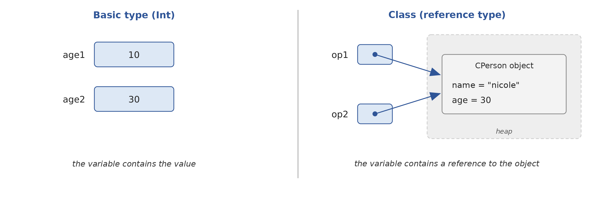

4. 类、接口、数据类
4.1. 通过示例认识对象
4.1.1. 概述
现在我们通过示例来探讨面向对象编程。对象是一个实体，它包含定义其状态的数据（称为字段、属性等）和函数（称为方法）。对象是基于一个称为类的模板创建的。例如，一个名为 [C1] 的类声明了两个属性——[var p1: Type1] 和 [var p2: Type2]——以及两个方法——[fun m3(...): Type3 { ... }] 和 [fun m4(...): Type4 { ... }]，它们都包含在声明 [class C1 { ... }] 的花括号之内。
从类 [C1] 可以创建许多对象，如 [o1]、[o2]……它们都具有属性 [p1]、[p2]……以及方法 [m3]、[m4]……不过，它们的 [pi] 属性会有不同的值，因此每个对象都有自己的状态。如果 [o1] 是类型为 [C1] 的对象，则 [o1.p1] 指的是 [o1] 的属性 [p1]，而 [o1.m3(...)] 指的是对 [o1] 的方法 [m3] 的调用。
让我们考虑第一个对象模型：类 [Person]。
4.1.2. 由多个文件组成的程序
在上一章的示例中，程序只有一个源文件。从现在起，程序可以由多个源文件组成：例如每个类一个文件，外加主程序。与 Java 不同，Kotlin 不要求文件名与其所含的类之间有任何联系：一个文件可以包含多个类和顶层函数。不过，惯例——我们也将遵循——是把重要的类放在以其命名的文件中：类 *[Person] 位于文件 *[Person.kt] 中。
本章的程序被归集在 Gradle 项目 [04-classes] 中，其结构与上一章的项目（[03-basics]）相同：每个程序是 [src/main/kotlin] 目录内的一个包。我们正在研究的多文件程序是 [persons] 包：
两个文件都以 [package persons] 这一行开头：它们属于同一个包，无需 import 语句即可互相看到。文件 [Main.kt] 包含顶层函数 [main]；编译器把它放在以文件命名的 JVM 类 [MainKt] 中，其完整名称为 [persons.MainKt]。这就是提供给 Gradle 用来运行程序的名称：
Gradle 编译项目中的所有文件，然后执行指定类的 [main] 方法。在 IntelliJ IDEA 中，只需单击 [main] 函数旁边页边空白处显示的绿色三角形即可。编译器为每个类写入一个 [.class] 文件（其中包含 JVM 的中间代码，即“字节码”）：在这里是项目 [persons/Person.class] 和 [persons/MainKt.class]，位于 [build] 文件夹中。
4.1.3. Person 类的定义
[Person] 类在源文件 [Person.kt] 中的定义如下：
- 第 1 行：该类属于 [persons] 包。包将在本章后面讨论；
- 第 3 行：该类前面没有任何可见性关键字；它是公共的，可以被所有其他类使用。在 Kotlin 中，[public] 是默认的可见性；
- 第 5–7 行：该类的三个属性。关键字 [var] 表示它们是可变的（关键字 [val] 会使它们成为只读的）。Kotlin 要求属性必须初始化（这里用空字符串和 0）：与 Java 不同，没有隐式的默认值（[null]、0、[false]）。属性的类型 [String] 和 [Int] 由这些初始值推断出来，就像局部变量一样；
- 第 10–13 行：设置对象状态的方法；
- 第 17–18 行：显示对象状态的方法。
这里我们有了一个类的定义，也就是一种数据类型。当我们创建这种类型的变量时，称它们为对象或类的实例。因此，类是构造对象所依据的模板。按照惯例，类名以大写字母开头（[Person]），而属性或方法名以小写字母开头（[firstName]、[initialize]）。
Kotlin 使用术语“属性” 而不是“字段”：稍后我们会看到，属性是一个字段加上其 getter 和 setter 方法，类似于 C# 中的属性。像这里所示的私有属性就只是一个字段。类的成员可以是数据（属性）或方法（函数）。这些成员可以带有下列关键字之一：
关键字 | 访问权限 |
[private] | 私有成员只能被该类自己的方法访问 |
[protected] | 受保护成员可以通过该类的方法及其派生类的方法访问（见下文的继承概念）。与 Java 不同，同一包中的其他类不能访问它 |
[internal] | 内部成员可以被同一 模块中的任何方法访问，所谓模块，就是一起编译的文件集合（一个 Gradle 项目或子项目，一个 IntelliJ IDEA 模块） |
[public] | 公共成员可以被任何方法访问，无论该方法是否定义在该类之内。当没有指定关键字时，这是默认的访问级别 |
通常，类的数据声明为私有，而其方法是公共的。这意味着对象的使用者（程序员）：
- 无法直接访问对象的私有数据；
- 可以调用对象的公共方法，包括那些提供对其私有数据的访问的方法。
成员的声明顺序是任意的。请注意，默认访问级别是公共的，这与 Java 不同，Java 的默认级别是包私有：在 Kotlin 中，必须显式写出 [private] 才能使成员私有。Kotlin 没有“包”访问级别；模块级别的 [internal] 访问起到了这个作用。
关键字 [private]、[internal]和 [public] 也适用于顶层声明（在任何类之外定义的类、函数和属性）。以 [private] 声明的顶层声明仅在其所在文件内可见。
4.1.4. initialize 方法
方法 [initialize] 的作用是什么？由于 [lastName]、[firstName] 和 [age] 是 [Person] 类的私有成员，在主程序中写出像 [p1.firstName = "Jean"] 这样的语句是无效的。编译器会拒绝它：
该消息指出了错误所在的文件、行和列（[5:8]），然后用插入符号突出显示它。在 IntelliJ IDEA 中，错误一输入就会用红线标出，Gradle 显示同样的消息，前面加上 [e:] 和完整的文件路径。该消息是英文的：Kotlin 编译器不为其消息提供法语翻译。我们需要通过一个公共方法来初始化 [Person] 类型的对象。这就是 [initialize] 方法的用途。我们将写 [p1.initialize("Jean", "Dupont", 30)]。这种语法是有效的，因为 [initialize] 可以被公开访问。
4.1.5. 创建对象：没有 new 运算符
然而，还缺少一样东西：必须创建对象。在程序 [Main.kt] 中，表达式 [Person()] 创建一个 [Person] 类型的对象：类像函数一样被“调用”。与 Java 和 C# 不同，Kotlin 没有 new 运算符。创建的对象尚未初始化：其属性具有默认值，即 [lastName] 和 [firstName], 为空字符串，[age] 为 0。
声明 [val p1 = Person()] 将 [p1] 声明为对该对象的引用。如果我们声明变量而不初始化它，即 [val p1: Person]***，然后写 ***[p1.initialize("Jean", "Dupont", 30)]***，我们就是在一个不存在的对象上调用方法 [initialize]，编译器会报告错误：变量 [p1]* 尚未被赋值。
在 Java 中，可以写 [Person p1 = null;] 来表示该变量尚未引用任何对象；调用 [p1.initialize(...)] 会被编译器接受，并在运行时导致 [NullPointerException] 异常。正如我们在上一章中看到的，Kotlin 区分允许值 [null] 的类型和不允许该值的类型。类型 [Person] 不允许它：
类型 *[Person?]* 确实接受它，但编译器随后会拒绝直接的方法调用：
你必须写 [p1?.initialize(...)]，它仅在 [p1] 不为 [null] 时才调用该方法，或者写 [p1!!.initialize(...)]，它告诉编译器 [p1] 不是 [null]。在后一种情况下，如果断言为假，则在运行时抛出 Java 异常：
因此，Java 在运行时才检测到的大多数错误，在 Kotlin 中由编译器检测出来。要让 [p1] 引用一个对象，我们写 [val p1 = Person()]。现在 [p1] 引用了一个对象，该对象的初始化语句 [p1.initialize("Jean", "Dupont", 30)], 就是有效的。
4.1.6. this 关键字
让我们看看 [initialize] 方法的代码：
语句 [this.firstName = p] 表示 [firstName] 属性（所属的当前对象为 [this]）被赋值为 [p]。关键字 [this] 指当前对象：即执行该方法所针对的对象。我们怎么知道这一点？让我们看看调用程序中由 [p1] 引用的对象是如何初始化的：[p1.initialize("Jean", "Dupont", 30)]。被调用的是 [initialize] 方法，它属于对象 [p1] 。当在该方法内部引用对象 [this] 时，它实际上指的是对象 [p1]。
当对象的方法引用该对象的属性 [a] 时，隐含着 [this.a] 这种写法：方法 [initialize] 本来可以写 [firstName = p] 和 [lastName = n]。当存在标识符冲突时，必须显式使用 [this] 。语句 [this.age = age] （第 4 行）就是这种情况，其中 [age] 既指当前对象的属性，又指方法接收的参数 [age] 。在该方法内部，单独的名称 [age] 指的是参数；属性必须写成 [this.age]。请注意，函数参数是只读的：在方法内部写 [age = 0] 这样的语句会被编译器拒绝。
4.1.7. 测试程序
下面是一个简短的测试程序。它写在源文件 [Main.kt] 中：
- 第 4 行：函数 [main] 是程序的入口点。与上一章一样，它是一个写在任何类之外的顶层函数；
- 第 6 行：创建由 [Person] 引用的 [p1] 对象。由于 [Person] 类属于同一个包，无需导入即可识别它。[p1] 的类型 [Person] 由编译器推断；
- 第 7 行：对象的初始化；
- 第 8 行：显示其状态。
结果：
4.1.8. 单个文件中的多个类
对于一个简短的示例，包含多个文件的包显得过于庞大。因此，和上一章一样，我们将只写一个文件——例如 [Classes01.kt]——其中包含函数 [main]，可能还有其他函数，以及程序所需的类。每个文件都放在以其命名的包（[classes01]）中，这使得项目中的每个程序都可以有自己的 [Person] 类：类 [Person] 位于文件 [Classes01.kt] 中，其完整名称为 [classes01.Person]；文件 [Classes02.kt] 中的类的完整名称为 [classes02.Person]，依此类推。使用命令 [gradlew -q run -Pmain=classes01.Classes01Kt] 来执行它。
理解编译器如何处理这样的文件很重要。文件中的类是普通的顶层类，与写在各自的文件中完全一样；顶层函数，包括 [main]，被归入一个以文件命名的类 [Classes01Kt] 中。编译该文件可以证明这一点：
这带来了一个使 Kotlin 区别于 Java 的后果。在 Java 中，紧凑源文件中的类嵌套在一个隐式类内部，并与文件中的 [main] 方法共享其私有成员。在 Kotlin 中，没有外围类：类的 [private] 成员对函数 [main] 仍然不可访问，即使它写在同一个文件中。因此，本章中的简短示例将显示与程序 [persons] 相同的编译错误。
4.1.9. 另一种初始化方式：重载
让我们继续使用类 [Person] 并为它添加第二个方法 [initialize]。程序 [Classes01.kt] 如下：
- 第 2 行：程序的包；
- 第 4–10 行：主程序；
- 第 14 行：类 [Person] 声明在函数 [main] 之后。在 Kotlin 中，文件中声明的顺序无关紧要；
- 第 21–24 行：上一段中的 [initialize] 方法；
- 第 28–31 行：第二个方法 [initialize]。
现在我们有了两个名为 [initialize] 的方法：只要它们接受不同的参数（数量或类型不同），这就是有效的。方法 [initialize] 被称为是重载的。编译器根据实际参数选择要调用的方法：[p1.initialize("Jean", "Dupont", 30)] （第 6 行）调用第一个，而 [p2.initialize(p1)] （第 9 行）调用第二个。仅靠返回类型不足以区分两个方法：名称相同、参数相同而仅返回类型不同的两个方法会被拒绝。我们将看到，在 Kotlin 中，参数默认值常常使我们无需编写同一方法的多个版本。
第二个方法的参数是对某个人的引用（[p]) 。然后，这个人的属性（[p]) 被赋给当前对象（[this]）。请注意，方法 [initialize] 可以直接访问对象 [p] 的属性，即使它们是私有的（第 29–31 行）。这始终成立：[C] 类的方法可以访问同一 [C] 类所有对象的私有成员。
结果：
4.1.10. Person 类的构造函数
构造函数是在创建对象时调用的函数。它通常用于初始化对象。它可以接受参数，但不返回值。如果类 [C] 有一个接受 n 个参数的构造函数，则创建该类的对象写作 [val obj = C(arg1, arg2, ... argn)]。
当类 [C] 有一个或多个构造函数时，必须使用其中一个构造函数来创建该类的对象。如果类 [C] 没有声明任何构造函数，它就有一个不带参数且什么也不做的默认构造函数。对象的属性随后保持其初始值。这就是前面的程序中发生的情况，在那里我们写的是 [Person()]。
Kotlin 区分两种构造函数：
- 主构造函数，每个类最多一个，声明在类头部、紧跟类名之后：[class Person(firstName: String, lastName: String, age: Int)]；
- 次构造函数，使用关键字 [constructor] 声明在类体内。当类有主构造函数时，每个次构造函数都必须调用它，可以直接调用，也可以通过另一个次构造函数调用。
程序 [Classes02.kt] 为类 [Person] 提供了三个构造函数：
- 第 15 行：主构造函数。它的三个参数前面都有 [private val]：这是一种简写记法，同时声明一个构造函数参数和一个同名的私有只读属性，并用参数的值初始化。该类没有其他属性：它们都声明在头部；
- 第 17 行：次构造函数，即复制构造函数。记法 [: this(p.firstName, p.lastName, p.age)] 调用同一个类中接受三个参数的构造函数：[String]、[String] 和 [Int]——在这里就是主构造函数。这称为构造函数的链式调用。这样，初始化代码只需写一次。该构造函数没有函数体：它没有其他事情可做；
- 第 20 行：不带参数的次构造函数，同样链接到主构造函数。由于该类声明了带参数的主构造函数，它就不再有默认构造函数：如果我们希望能够写 [Person()]，就必须声明它；
- 第 4–10 行：使用这三个构造函数。
第 15 行的简写记法等价于下面这种较长的记法，其中主构造函数的参数——不含 *[val]*——只是用来初始化声明在类体中的属性的参数：
这比 Java 版本短得多，在 Java 中必须先声明字段，然后在构造函数中逐个初始化它们（[this.firstName = firstName;]……）。主构造函数没有函数体：构造对象时要执行的语句放在 [init] 块中，我们稍后会介绍。我们还将看到，借助参数默认值，Kotlin 通常不需要次构造函数：[class Person(..., private val age: Int = 0)] 允许你既写 [Person("Jean", "Dupont", 30)] 也写 [Person("Jean", "Dupont")]。
结果：
4.1.11. 对象引用
我们使用上一个程序中的 [Person] 类，省略其无参构造函数，但包含本章开头的 [initialize(String, String, Int)] 方法。因此，它的属性使用 [var] 而不是 [val] 声明。测试程序变为如下的 [Classes03.kt]：
函数 [print] （第 7、10 行……）写出其参数而不换行。这些行上的两条语句由分号分隔，在 Kotlin 中只有在同一行书写多条语句时才需要分号。结果：
当变量 [p1] 由 [val p1 = Person("Jean", "Dupont", 30)] （第 6 行）声明时，[p1] 引用对象 [Person("Jean", "Dupont", 30)] ，但它本身并不是该对象。在 C 中，这被称为指针，即所创建对象的地址。如果 [p1] 被声明为 [var p1: Person? = ...] ，然后我们写 [p1 = null]，被修改的就不是对象 [Person("Jean", "Dupont", 30)] ，而是引用 [p1] 改变了它的值。如果没有其他变量引用该对象，它就会“丢失”：它占用的内存稍后会被 Java 虚拟机的垃圾回收器回收，Java 虚拟机执行 Kotlin 程序的方式与执行 Java 程序完全一样。
当我们写 [val p2 = p1] （第 9 行）时，我们初始化了引用 [p2]：它与引用 [p1] 一样“指向”同一个对象（引用同一个对象）。因此，如果你修改 [p1]“指向”（或引用）的对象，也就修改了 [p2] 所引用的对象（结果的第 4–5 行）。请注意，[p1] 和 [p2] 是用 [val] 声明的：该关键字禁止更改变量中所包含的引用 ，而不是禁止修改被引用的对象，而调用 [p1.initialize(...)] 做的正是这件事（第 15 行）。
当你输入 [val p3 = Person(p1)] （第 12 行）时，会创建一个新对象 [Person]。这个新对象将由 [p3] 引用。如果你修改 [p1] 所引用的对象，不会影响 [p3] 所引用的对象（结果的第 6 行）。
最后，在第 22 行，应用于两个对象引用的运算符 [===], 指示它们是否引用同一个对象：[p1] 和 [p2] 引用同一个对象，而 [p1] 和 [p3] 引用两个不同的对象，尽管它们的内容相同（结果的第 7 行）。这就是 Java 中的 [] 运算符。在 Kotlin 中，[] 运算符通过调用对象的 内容 的 [equals] 方法来比较它们：我们稍后会看到如何定义它。对于没有定义 [equals] 的类（如本例），[p1 == p3] 仍然比较引用，其结果为 [false]。
4.1.12. 传递对象引用参数
在上一章中，我们看到 Kotlin 与 Java 一样，函数参数是按值传递的：函数接收的是实际参数值的副本。让我们看看当参数是对象引用时这意味着什么。为此，我们将使用 [StringBuilder] 类（JDK 的类，Kotlin 直接使用它）。[String] 对象不能被修改：像 [s.uppercase()] 这样的操作返回一个新的 [String] 对象。另一方面，[StringBuilder] 对象是可变字符串：它的 [append] 方法向字符串追加字符而不创建新对象。
在 Java 中，该示例把一个新对象赋给被调用函数的参数 [sbf1] 。这在 Kotlin 中是不可能的：函数参数是只读的，就像 [val] 变量一样。编译器会拒绝语句 [sbf1 = StringBuilder("test1*****")]：
因此，程序 [Classes04.kt] 把参数 [sbf1] 复制到一个可修改的局部变量中：
- 第 5–6 行：两个引用 [sb0] 和 [sb1], 分别指向类型为 [StringBuilder] 的对象；
- 第 8 行：它们被传给函数 [changeStringBuilder]，其结果——第三个引用——被赋给 [sb2]；
- 第 13–24 行：一个顶层函数，它有形式参数 [sbf0] 和 [sbf1]。函数开始时，[sbf0] 和 [sb0] 是指向同一个对象的两个不同的引用：引用 [sb0] 被复制到了 [sbf0] 中（引用是按值传递的）。[sbf1] 和 [sb1] 同样如此；
- 第 19–20 行：局部变量 [sbl] 先接收引用 [sbf1]，然后接收指向新对象的引用。这正是 Java 程序对参数 [sbf1] 本身所做的事情。
结果：
解释：
- [sb0] 和 [sbf0] 是指向同一个对象的两个不同的引用。该对象通过 [sbf0] 被修改（第 16 行）。这一修改通过 [sb0] 可见（结果的第 4 行）；
- [sb1]、[sbf1] 以及最初的 [sbl] 是指向同一个对象的三个不同的引用。[sbl] 被赋予新值，现在指向一个新对象（第 20 行）。这不会改变 [sbf1] 或 [sb1] 的值，它们继续指向原来未被修改的对象（结果的第 3 行和第 4 行）；
- 因此，Kotlin 函数不能改变属于调用者的变量的值。要把一个新对象传给调用者，函数将其作为结果返回（第 22 行和第 24 行）。当有多个结果时，它们被组合成一个对象：二元组（[Pair]，如上一章所见）或数据类（见下文）。
请记住，函数可以修改参数所引用的对象 ，但不能修改调用者中包含该引用的变量 。与 Java 一样，而与 C# 不同，Kotlin 不按引用传递参数；它比 Java 更进一步，禁止对参数进行任何赋值，从而避免参数与调用者的变量之间产生混淆。
4.1.13. 临时对象
在表达式中，你可以显式调用对象的构造函数：对象被创建，但没有变量可供以后访问它（例如修改它）。这个临时对象是为求值表达式而创建的，随后即被丢弃。它占用的内存空间稍后会被垃圾回收器自动回收，垃圾回收器的作用是回收那些不再被程序数据引用的对象所占用的内存空间。
考虑下面的程序 [Classes05.kt]，其中 [Person] 类的构造函数会显示一条消息。借此机会，我们引入初始化块 [init]：
- 第 5 行：对象 [Person("Jean", "Dupont", 30)] 被构造出来，然后传给复制构造函数，由后者构造第二个对象；随后在该对象上调用方法 [identify]。这两个对象都没有被变量引用；
- 第 9–11 行：由于主构造函数没有函数体，构造对象时要执行的语句放在 [init] 块中。一个类可以有多个 [init] 块：它们与类体中声明的属性的初始化一起，按书写顺序执行。它们是主构造函数的一部分，可以访问其参数；
- 第 15–16 行：次构造函数可以有函数体。它在由 [: this(...)] 调用的构造函数——在这里就是主构造函数及其 [init] 块——执行之后执行。
结果：
结果显示了两个临时对象的依次构造。第一个由主构造函数构造（结果的第 1 行）。第二个由次构造函数构造，它首先调用主构造函数——因此执行了 [init] 块（第 2 行）——然后执行它自己的函数体（第 3 行）。在 Java 中，该示例的复制构造函数并没有链接到主构造函数，只显示它自己的消息；在 Kotlin 中，只要类有主构造函数，每个对象都要经过它：[init] 块总是会被执行。
4.1.14. 属性：Getter 和 Setter 方法
在 Java 中，惯例是声明私有字段，并通过公共方法来访问其值：getter，如 [getAge()]，以及 setter，如 [setAge(int)]。这些方法需要手工编写（或由开发环境生成），类的使用者要写 [p.setAge(p.getAge() + 1)]。Kotlin 与 C# 一样，有属性：公共属性是使用者像字段那样用点号记法读写的数据，但实际上是通过 getter 和 setter 来读写的。它们由编译器生成。程序 [Classes06.kt] 演示了这一点：
- 第 14 行：类
*[Person]* 只占一行。主构造函数的三个参数前面都有*[var]*：它们是三个公共属性（默认可见性），既可读又可写。由于类没有类体，花括号被省略； - 第 7 行：读取属性 [p.firstName]、[p.lastName] 和 [p.age]。每次读取操作都是对属性访问器的调用；
- 第 9 行：写入属性 [age]，即调用其 setter。
结果：
JDK 的 [javap] 工具用于显示 [.class] 文件的内容，它显示了 Kotlin 编译器为 [Person] 类生成的内容（[-p] 选项还会显示私有成员）：
每个属性都生成了一个私有字段（第 3–5 行）、一个公共 getter 和一个公共 setter（第 7–12 行），它们遵循 Java 早期确立的命名约定，即“JavaBeans”：属性 [age] 的 getter 名为 [getAge]，其 setter 为 [setAge]；名称以 [is] 开头的布尔属性——如 [isActive]——其 getter 与属性同名，即 [isActive]，而 setter 名为 [setActive]。这很重要：许多 Java 库（例如用于 JSON 的 Jackson 和用于数据库的 Hibernate，我们稍后会用到）依靠这一约定来定位对象的数据；它们可以毫无困难地找到 Kotlin 对象的数据。反过来，使用 Java 类的 Kotlin 程序写 [p.age] 来调用 [p.getAge()]，写 [p.age = 56] 来调用 [p.setAge(56)]。我们还注意到，该类及其方法都是 [final]：我们将在讲继承时看到，在 Kotlin 中，类和方法默认是 final 的。
记法 [p.age = 56] 类似于对公共字段的赋值。区别是显著的：因为使用了 setter，我们可以——而无需更改类的使用者所写的任何代码——以后给该属性加上一个控制其所接收值的 setter。这是下一节的主题。因此，在 Kotlin 中，我们从不以 Java 的风格编写 getter 或 setter：我们声明属性。
4.1.15. 验证所接收值的 Setter
setter 相对于公共字段的优势在于可以控制赋给字段的值：setter 可以验证所接收的值，并在其无效时抛出异常。Kotlin 允许你为属性提供自定义 getter（[get]）和自定义 setter（[set]）。考虑程序 [Classes07.kt]：
这三个属性都有一个验证所接收值的自定义 setter：
- 第 39–44 行：属性 [firstName]。其声明之后的几行是其 setter 的定义 [set(value) { ... }]。参数 [value] 是赋给属性的值（名称 [value] 是约定俗成的，如同 C# 一样）；其类型就是属性的类型。该属性没有自定义访问器：它保留生成的访问器，返回所存储的值；
- 第 42 行：函数 [require(condition) { message }]（上一章已讨论）在条件为假时抛出 [IllegalArgumentException] 异常——专用于表示无效参数的异常。由花括号中的 lambda 表达式计算的消息仅在这种情况下才构造。函数 [isNotBlank] 在字符串至少包含一个空格以外的字符时返回 [true] 。无需像 Java 中那样测试值 [null] ：该属性的类型是 [String]，而不是 [String?]，编译器禁止将 [null] 赋给它；
- 第 44 行：在 getter 或 setter 中，关键字 [field] 指存储属性值的字段（称为“幕后字段”）。不要写 [firstName = value]：这将是对 setter 自身的调用，它会无限地调用自己；
- 第 47–58 行：属性 [lastName] 和 [age] 采用相同的模式构造；
- 第 37 行：该类有一个不带参数的主构造函数。属性的初始值（[""] 和 0）直接赋给字段，而不经过 setter；
- 第 62–65 行：一个使用 setter 初始化对象的次构造函数。这使它能够利用 setter 执行的检查，而这些检查只需编写一次。这里，[this.firstName = firstName] 就是调用 setter，作用于属性 [firstName] ，值为参数 [firstName] 的值。
为什么不写成 [class Person(firstName: String, lastName: String, age: Int)] ，并用 [var age = age] 初始化属性呢？因为在声明处初始化属性会直接作用于字段而不调用 setter：-4 的年龄会被毫无错误地接受。为了验证主构造函数接收的值，我们把检查写在 [init] 块中，或者像这里所示的那样，让值经过 setter。
在 Java 中，被构造函数调用的 setter 必须声明为 [final]：否则，派生类可能重新定义它们，父类的构造函数甚至会在派生类的构造函数执行之前就调用新版本。在 Kotlin 中，类及其成员默认是 final 的：无需这种预防措施。
结果：
结果的第 3 行表明赋值 [p.age = -4] （第 10 行）被 setter 拒绝了：[ex.message] 是异常消息。第 15–18 行：使用无参构造函数创建对象，然后通过其 setter 初始化。第 21–23 行：包含空格的名称被拒绝（结果的第 5 行）。第 29–30 行：三参数构造函数拒绝空的名字（结果的第 6 行）。
Java 没有对象初始化器——一种允许在对象创建表达式本身中设置多个属性的语法。Kotlin 也没有，但它提供了两种等价的解决方案：带名称和默认值的构造函数参数，以及 [apply] 函数。我们将在接下来的两段中介绍它们。
4.1.16. 只读属性与可选参数
用 [val] 声明的属性必须恰好被赋值一次——在其声明时、在主构造函数中或在 [init] 块内——此后不能再修改。编译器会强制这一点。这等价于 Java 中的 [final] 字段：该属性只有 getter，没有 setter。[Classes08.kt] 程序演示了几种情形，以及默认参数和命名参数：
- 第 33 行：名字是 [var] 属性，可读写；姓和城市是 [val] 属性，只读。构造函数给它们赋值，此后不能更改。参数 [age] 不带 [val] 或 [var]，只是一个构造函数参数；
- 第 35–36 行：属性 [age] 用参数 [age] 初始化。它对所有人可读，但其 setter 是私有的（[private set]）：只能由类的方法修改，例如 [growOlder]（第 43–44 行）。该 setter 保留其默认行为：它不需要函数体；
- 第 39–40 行：一个计算属性。它有一个自定义访问器 [get() = ...]，每次读取时根据其他属性计算其值；它没有存储值的字段。对类的使用者来说，它与其他属性没有任何区别：[p.identity] （第 7 行）。这等价于 Java 版本中的 [getIdentity()] 方法；
- 第 14–16 行：编译器拒绝的三条语句，原因见注释。如果取消这些注释，编译器会报告如下内容（我们还取消了第 24 行提到的 [Contact(null)] 语句的注释）：
- 第 49 行：类 [Contact] 有一个必需属性 email 和一个可选属性 phone。phone 属性的可选性通过构造函数参数 默认值 [phone] 来表达：[val phone: String = "unknown"]。如果省略该实参，如第 19 行，参数就取这个值。在没有可选参数的 Java 中，需要第二个构造函数——链接到第一个；在 Kotlin 中，一个构造函数就足够了。默认值以同样的方式用于任何函数的参数；
- 第 22 行：实参是命名的：[phone = "02 41 00 00 00"]。这样它们可以按任意顺序提供，并且当多个参数类型相同时，调用更具可读性。命名参数还允许你在多个可选参数中只省略其中一个：对于 [f(a: Int = 0, b: Int = 0)]，你可以写 [f(b = 5)]；
- 第 51–52 行：email 的必填性首先通过参数类型来表达：[String] 不接受值 [null]，调用 [Contact(null)] 在编译时被拒绝（上面的最后一个错误）。在 Java 中，这必须在运行时检查（[Objects.requireNonNull]）。下一步是拒绝空的电子邮件地址：这是块 [init] 的作用，它在构造对象时执行。在第 26 行，仅由一个空格组成的电子邮件地址被拒绝。
结果：
请注意这些声明有多么简短：[Person] 类在 Java 中带着其 getter、setter 和验证占了大约五十行，而在 Kotlin 中只占大约十五行。
4.1.17. 用 apply 和 also 函数取代流式修改器
在 Java 中，当对象有许多可选字段时，构造函数的数量会增加，setter 调用也会变得更长。一种常见的技术是让每个 setter 返回当前对象（[this]）：这样调用就可以链接在一起——这称为“链式”方法：[new Person().setFirstName("jean").setLastName("Dupont").setAge(30)]。在 Kotlin 中，默认参数和命名参数使这种技术大大减少了用处。而当你想在对象创建之后立即设置它的多个属性时，标准库提供了可用于任何对象的“作用域函数”，包括 [apply] 和 [also]。程序 [Classes09.kt] 演示了这些函数，并顺带介绍了 [lateinit] 属性：
- 第 7–10 行：[obj.apply { ... }] 以 [obj] 作为当前对象执行花括号之间的块：在块内，[firstName = " jean "] 指的是 [this.firstName = " jean "]，其中 [this] 是新建的人。然后 [apply] 返回对象本身，并将其赋给 [p]。这种赋值起到了对象初始化器的作用；每次赋值都要经过属性的 setter，因此也要经过其验证；
- 第 39–46 行：名字和姓的 setter 把函数 [validate] 返回的值赋给字段；
- 第 64–66 行：名字和姓的验证是相同的，被提取到函数 [validate] 中。它不使用人的任何属性：我们把它做成声明为 [private] 的顶层函数，因此只在文件 [Classes09.kt] 中可见。在 Java 中，这必须实现为类的私有静态方法。函数 [trim] 删除字符串的前导和尾随空格；
- 第 59 行：计算属性 [identity] 的类型 [String] 由其访问器表达式推断；
- 第 25–26 行：[obj.also { ... }] 通过把对象作为参数（记作 [it]）传给块来执行该块，然后返回该对象。它用于次要动作——例如这里所示的进度显示——而不会中断调用链。这里，[apply] 返回这个人，[also] 显示它，然后依次返回它，它被赋给 [p2]。第 25 行：[apply] 块中的三个赋值写在同一行上，用分号分隔；
- 第 56 行：原则上，类型不是 [null] 的属性必须在创建时被赋值。关键字 [lateinit] （“延迟初始化”）免除了这一要求：属性 [city] 将在稍后（第 33 行）被赋值。如果在此之前访问它，就会抛出 [UninitializedPropertyAccessException] 异常（第 29–31 行）。[lateinit] 只适用于不是 [var] 的对象类型的属性 [null]（[String]，但不适用于 [Int] 或 [String?]），并且不带自定义访问器或修改器。当值在对象构造之后才提供时使用它，例如由 Spring（第 6 章）这样的依赖注入框架提供，或由测试中的初始化方法提供。在类内部，表达式 [::city.isInitialized] 指示该属性是否已被赋值。
结果：
名字“jean”是带着前后空格输入的（第 8 行），但存储时没有这些空格（结果的第 1 行）。无效的修改尝试被拒绝，这个人没有被改变（结果的第 2–4 行）。结果的第 6 行是异常 [UninitializedPropertyAccessException] 的消息。
还有另外三个作用域函数：[let]（上一章已针对值 [null] 见过）、[run], 和 [with]。它们的区别在于块引用对象的方式（[this] 或 [it]）以及返回的内容（对象或块的结果）：
函数 | 块中的对象 | 结果 | 典型用途 |
[apply] | [this] | 该对象 | 配置新创建的对象 |
[also] | [it] | 该对象 | 在调用序列中执行后续动作（监控、验证） |
[let] | [it] | 块的结果 | 处理非 [null] 值：[x?.let { ... }] |
[run] | [this] | 块的结果 | 根据对象计算一个值 |
[with] | [this] | 块的结果 | [with(obj) { ... }]：对同一个对象进行多次调用 |
为了构建复杂对象，Java 常使用“生成器（Builder）”设计模式：一个配备流式方法的辅助类收集各个值，然后构造最终对象。在 Kotlin 中，带有命名参数和默认值的构造函数在大多数情况下取代了这种模式。
4.1.18. 类成员：伴生对象
假设我们想统计应用程序中创建的 [Person] 对象的数量。我们可以自己管理一个计数器，但有可能漏掉在各处创建的临时对象。更稳妥的做法似乎是在 [Person] 类的构造函数中加入一条递增计数器的语句。这个计数器不能是普通属性，因为每个对象都有自己的属性：它是类本身的属性，而不是该类某个特定实例的属性。
Java 使用关键字 [static] 来声明这样的成员。Kotlin 没有 [static] 关键字：类成员声明在伴生对象 （[companion object { ... }]）中，它是附属于类、声明在类体内的单个对象。它的成员通过类名来使用：[Person.nbPersons]、[Person.unknown()]。下面是一个示例 [Classes10.kt]：
- 第 31–37 行：类 [Person] 的伴生对象；
- 第 33–34 行：类属性 [nbPersons]，初始化为 0（由于后缀 [Long] ，其类型为 [L]）。它对所有人可读（[Person.nbPersons]，第 8 行），但其 setter 是私有的：只有类 [Person] 才能修改它。无需像 Java 中那样定义一个私有字段和一个静态访问器方法 [getNbPersons()]；
- 第 37 行：一个类方法。使用类名调用它：[Person.unknown()] （第 10 行）。伴生对象的方法没有当前的 [Person] 对象：它不能直接使用某个人的属性。像这样创建并返回其所属类的对象的方法，称为“工厂”；
- 第 21–22 行：块 [init] 递增计数器。它是主构造函数的一部分，因此链接到主构造函数的复制构造函数也会执行它。
程序的最后一个元素是一个单例对象，[Log]，使用关键字 [object] 声明（第 42–48 行）：
- 像 [object Log { ... }] 这样的声明同时声明了一个类及其唯一的实例，该实例在首次使用时自动创建。没有构造函数：不能再创建其他 [Log] 对象。该对象通过其名称引用：[Log.write(...)]；
- 对象有状态——在这里是最后写入的消息的编号——它在两次调用之间保持不变；
- 伴生对象是单例对象的一种特例：即附属于某个类的单例对象。
结果：
程序正确地统计了第 7 行创建的临时对象。日志为它的两条消息编了号。编译会为伴生对象生成一个类 [Person$Companion]，与类 [Person]、[Log], 和 [Classes10Kt] 并列；因此，对 JVM 而言，伴生对象的方法是 [Person.Companion] 对象的实例方法。为了让 Java 程序能把它当作静态方法调用（[Person.unknown()] 而不是 [Person.Companion.unknown()]），要用 [@JvmStatic] 注解它。
从一开始，我们就在使用在 Java 中会是静态方法的函数：[println]、[readln]……在 Kotlin 中，它们是顶层函数，声明在任何类之外。这是 Kotlin 编写 Java 所谓工具类（如类 [Math]）的方式：一个包含顶层函数的文件（标准库提供了 [kotlin.math.sqrt] 和 [kotlin.math.PI]），或者，如果你想把函数归入一个名称之下，则使用 [object]。伴生对象专用于真正属于该类的事物：工厂、常量和计数器。
4.1.19. 人员数组
对象和其他数据一样，也是一种数据，因此多个对象可以组合成一个数组 [Classes11.kt]：
- 第 6 行：创建一个包含 3 个元素的数组。函数 [arrayOfNulls<Person>(3)] 用值 [null] 初始化这些元素，即它们不引用任何对象：因此数组类型为 [Array<Person?>]，这是一个可以保存值 [null] 的引用数组。通俗地说，我们称之为“对象数组”，尽管它只是一个对象引用数组。数组的创建——它本身也是一个对象——并不会创建与其元素同类型的任何对象；这必须在随后完成；
- 第 7–9 行：创建 3 个 [Person] 类型的对象；
- 第 11–12 行：显示数组 [friends] 的内容。变量 [friend] 的类型为 [Person?]：编译器要求使用安全调用 [friend?.identify()]，当 [friend] 等于 [null] 时它什么也不做。
结果：
元素类型 [Person?] 表明，在 Java 中创建的空数组包含 [null]。在 Kotlin 中，通过连同元素一起创建数组可以避免这种情况，如下一段所示。
4.1.20. 类型推断与数组初始化
程序 [Classes12.kt] 演示了简化对象和数组创建的语法：
- 第 6 行：变量的类型 [Person] 是由初始化它的表达式推断出来的。尽管如此，变量仍是有类型的：[p1] 只能引用某个人。自课程开始以来，这一直是 Kotlin 的标准写法；Java 中与之对应的是关键字 [var]。Kotlin 比 Java 更进一步：类型推断还适用于属性（[identity]，第 38 行）以及函数体为表达式的函数的返回类型；
- 第 36 行：所有属性都有默认值。因此可以不带实参地调用主构造函数 [Person()] （第 7 行），然后给这个人赋属性值（第 8–10 行）。无需声明无参构造函数；
- 第 12–16 行：由函数 [arrayOf(...)] 创建并填充的数组，该函数接收各元素的值。数组的大小就是值的个数；其类型 [Array<Person>] 由这些值的类型得出：元素不能是 [null] 类型。实参列表中允许有尾随逗号（第 16 行），任何参数列表也是如此：这使得添加元素更容易；
- 第 18 行：循环变量 [friend] 的类型是 [Person]：这次不需要安全调用；
- 第 22 行：一个即时创建、作为参数传递的数组。这称为匿名数组：函数 [main] 中没有任何变量引用它。与 Java 不同，无论数组是在声明中创建还是在别处创建，语法上都没有区别；
- 第 24 行：构造函数 [Array(size) { i -> ... }] 创建一个数组，其中每个元素由 lambda 根据其下标 [i] 计算得出；
- 第 29–31 行：一个接受人员数组的顶层函数。
结果：
我们很少使用对象数组：下一章将介绍列表（[List]、[MutableList]），它们更灵活（[listOf(p1, p2)] 的写法类似于 [arrayOf(p1, p2)]）。
4.2. 通过示例认识继承
4.2.1. 概述
这里我们讨论继承的概念。继承的目的是“定制”一个现有的类，使其满足我们的需要。假设我们想创建一个类 [Teacher]：教师是一种特殊类型的人。他们有其他人所没有的属性：例如所教授的科目。但他们也具有所有人共有的属性：名、姓和年龄。因此，教师是类 [Person] 的正式成员，但具有额外的属性。与其从头创建类 [Teacher] ，我们更愿意在现有的类 [Person] 的基础上构建，并使其适应教师的特定特征。继承的概念使这成为可能。
要表明类 [Teacher] 继承自类 [Person]，我们写 [class Teacher(...) : Person(...)]：父类的名称跟在冒号之后，如同 C# 一样，而 Java 写作 [extends Person]。
[Person] 称为父类（或基类、超类），而 [Teacher] 称为派生类（或子类）。[Teacher] 对象具有 [Person] 对象的所有特征：它具有相同的属性和方法。父类的这些属性和方法不会在子类的定义中重复；我们只需指定子类新增的属性和方法。一个 Kotlin 类只能继承自一个父类。
与 Java 的一个重要区别：在 Kotlin 中，类默认是final 的，也就是说不能被继承。要允许派生，必须将父类声明为 [open] （“开放”）。这是语言设计者有意为之的选择：一个类必须被设计成可供派生，而编写它的人必须明确说明这一点。
本段中的示例是两个多文件程序，位于包 [inheritance1] 和 [inheritance2] 中。在 [inheritance1] 包中，[Person] 类在 [Person.kt] 中定义如下：
- 第 4 行：该类是 open 的（[open]）：可以从它派生子类。主构造函数有三个参数，它们不是属性（没有 [val] 或 [var]）；
- 第 6–19 行：三个属性，其 setter 验证所接收的值（参见程序 [Classes07.kt]）。名字和姓的检查是相同的，它们被提取到私有函数 [validate] 中（第 42–44 行），如同程序 [Classes09.kt] 中那样；
- 第 23 行：最初示例中的方法 [identify] 已被计算属性 [identity] 取代，它返回这个人的身份信息而不是显示它；
- 第 26–31 行：主构造函数的块 [init] 使用属性 setter 初始化对象，递增人员计数器，并显示一条后续消息。它位于属性声明之后：属性初始化和 [init] 块按其书写顺序执行，并且属性必须先初始化（这里用 [""] 或 0）才能使用；
- 第 34–37 行：来自伴生对象一节的人员计数器。
我们创建一个类 [Teacher] ，它继承自类 [Person] [Teacher.kt]：
类 [Teacher] 在类 [Person] 的属性和方法之外又添加了：
- 第 5–6 行：类 [Teacher] 派生自类 [Person]。头部写成两行以适应页面；
- 第 5 行：属性 [section]，声明在主构造函数中（[var section: Int]），它是教师在学院内所属的系的编号（大致每个科目一个系）。该属性是可读写的：它取代了 Java 版本中的 getter 和 setter；
- 第 9–10 行：一个显示进度消息的 [init] 块。
4.2.2. 创建 Teacher 对象
子类不继承其父类的构造函数。它必须定义自己的构造函数。[Teacher] 类的头部如下：
主构造函数接收四个参数（[firstName]、[lastName]、[age]、[section]），并将其中三个（[firstName]、[lastName]、[age]）传给其父类——在这里就是类 [Person]——使用语法 [: Person(firstName, lastName, age)] （第 2 行）。我们知道该类有一个构造函数 [Person(String, String, Int)], 它将允许我们使用传入的参数创建一个人。一旦 [Person] 部分的构造完成（初始化以及 [init] 块，属于 [Person] 类），[Teacher] 对象的构造将继续进行其 [section] 属性的初始化以及其自身 [init] 块的执行。记法 [: Person(firstName, lastName, age)] 对应于 Java 构造函数中的 [super(firstName, lastName, age);] 语句；如果派生类没有主构造函数，则它的每个次构造函数都通过 [constructor(...) : super(...)] 调用父类的构造函数。
总之，派生类的构造函数：
- 把父类构造自身所需的参数传给父类；
- 使用其余参数初始化自己的属性。
也许更好的做法是在 [firstName]、[lastName] 和 [age] 属性直接在 [Teacher] 类中初始化，使用诸如 [this.firstName = firstName] 这样的语句。这在这里是可行的，因为这些属性是公共且可变的，但这是一个糟糕的解决方案，而且如果它们是私有的就不可能做到：[Person] 类的私有成员只能被 [Person] 类的方法访问。所有其他对象，包括像这里这样的派生类的对象，都必须通过公共（或受保护，如 [protected]）成员来访问它们。最重要的是，对象的 [Person] 部分无论如何都必须由 [Person] 类的某个构造函数实例化。如果你不带实参地写 [: Person()] ，编译器会报告缺少父类构造函数的参数：
因此，使用父类的构造函数是正确的解决方案，也是标准做法：创建子对象时，先调用父对象的构造函数，然后完成子对象特有的初始化（在我们的示例中是 [section] ）。
最后，如果省略关键字 [open] （位于类 [Person] 之前），派生会被拒绝：
4.2.3. 继承的方法
类 [Teacher] 没有定义名为 [identity] 的属性。因此，表达式 [e.identity]（其中 [e] 是一位教师）指的是属性 [identity] ，它继承自类 [Person]：它是公共的，通过继承成为类 [Teacher] 的公共属性。方法也是如此。测试程序 [Main.kt] 来自包 [inheritance1] ，如下：
- 第 5 行：创建一位教师；
- 第 7 行：显示教师的身份信息，它是通过从 [identity] 类继承的 [Person] 属性得到的；
- 第 9 行：属性 [section]，类 [Teacher] 所特有；
- 第 13–14 行：先后以一位教师和一个人调用函数 [display] （第 22–23 行）。我们将在下一段回到这一点；
- 第 16–17 行：对这两个对象调用 [toString] 方法。我们也会回到这一点。
结果：
我们可以看到：
- 对象 [Person] （结果的第 1 行）先于对象 [Teacher] （第 2 行）被构造；
- [e.identity] 提供了教师的 [Person] 部分的身份信息，不包含其系别（第 3 行）；
- 人员计数器也把教师计算在内（第 10 行）：教师是一种人。
要获得教师完整的身份信息，类 [Teacher] 必须定义它自己的属性 [identity]。这正是包 [inheritance2] 所做的。
4.2.4. 多态
考虑一个类层次结构：C0 ← C1 ← C2 ← … ← Cn，其中 Ci ← Cj 表示类 Cj 派生自类 Ci。这意味着类 Cj 具有类 Ci 的所有特征，再加上额外的特征。设 Oi 是类型为 Ci 的对象。当 j > i 时，写 [Oi = Oj] 是有效的。的确，通过继承，类 Cj 具有类 Ci 的所有特征，再加上额外的特征。因此，类型为 Cj 的对象 Oj 包含一个类型为 Ci 的对象。操作 [Oi = Oj] 使类型为 Ci 的变量 Oi 引用对象 Oj：通过它只能访问类 Ci 中定义的成员。
类 Ci 的变量 Oi 实际上不仅可以引用类 Ci 的对象，还可以引用从类 Ci 派生的任何对象，这一事实称为多态：变量引用不同类型对象的能力。
让我们举一个例子，考虑上一个程序中的函数 [display] ：
我们既可以向它传递一个 *[Person] ，也可以传递一个 *[Teacher]：在后一种情况下，形式参数 [p], 的类型为 [Person], 它接收了类型为 [Teacher] 的值。由于类型 [Teacher] 派生自类型 [Person]，这是有效的。这里表达式 [p.identity] 使用了属性 [identity] ，它属于类 [Person]，即程序中唯一存在的那个：对于教师（结果的第 6 行），我们只得到其“Person”部分的身份信息。让我们看看当类 [Teacher] 有它自己的属性 [identity] 时会发生什么。
4.2.5. 方法重定义与动态绑定
在包 [inheritance2] 中，类 [Person] 与包 [inheritance1], 中的类相同，只有两处改动：
- 第 2 行：属性 [identity] 被声明为 [open]：它可以在派生类中被重写。在 Kotlin 中，方法和属性与类一样默认是 final 的：只有 [open] 类 [open] 的成员才能被重写；
- 第 4–5 行：对 [toString] 方法的重写，将在下一段讨论。
在 [Teacher] 类中，[identity] 属性被重新定义如下：
- 第 13 行：属性 [identity] 重写了父类的属性；它具有相同的名称和相同的类型。它使用其父类的属性 [identity]（记作 [super.identity]）来获取“Person”部分，然后补充类 [Teacher] 特有的系别。方法以同样的方式重新定义：相同的名称、相同的参数、相同的返回类型，以及关键字 [override]；
- 第 13 行：关键字 [override] 是必需的。它的作用与 Java 中的 [@Override] 注解相同，而后者是可选的：如果该属性并没有重新定义任何内容（例如名称拼写错误或类型不同），编译器会报告错误，而不是悄悄地创建一个新成员。反过来，没有
*[override]* 的重新定义会被拒绝：
- 并且，如果 [identity] 类的 [Person] 属性没有声明为 [open]，重新定义也会被拒绝：
- 第 3 行：类 [Teacher] 没有被声明为 [open]：它是 final 的，我们稍后会解释。
考虑一个 [Teacher] 对象 [E]。该对象包含一个 [Person] 对象：

属性 [identity] 在类 [Teacher] 及其父类 [Person] 中都有定义。[p.identity] 所使用的版本是在运行时根据 [p] 所引用的对象的实际类型来确定的，而不是在编译时根据变量的声明类型确定。这称为动态绑定。为了执行 [o.m()]，虚拟机按以下顺序搜索名为 [m] 的方法：
- 在 [o] 对象的类中；
- 如果它有父类，则在其父类中；
- 在其父类的父类中（如果存在）；
- 依此类推。
属性也是如此，读取属性涉及调用其访问器，而访问器就是方法。因此，继承允许你在子类中重新定义与父类中签名相同的成员。这使你能够让子类适应自己的需要。包 [inheritance2] 中的程序 [Main.kt] 如下：
结果：
这一次，在结果的第 3 行，[display] 函数正确地显示了教师的完整身份信息。程序的第 11–13 行表明，当通过类型为 [Person] 的变量来看待它，或者用运算符 [as] 把它转换为 [Person]（相当于 Java 运算符 [(Person)]）时，教师仍然是教师：被使用的仍然是属性 [identity] ，它属于类 [Teacher] （结果的第 6–7 行）。转换改变的是引用的类型，而不是对象的类型。
在这一点上，Kotlin 更接近 C# 而不是 Java。在 C# 中，方法只有在声明为虚方法（[virtual]）时才能被重写，并且重写用 [override] 表示；在 Kotlin 中，[open] 的作用与 [virtual] 相同。另一方面，在 Java 中，所有方法默认都可以被重写，除非声明为 [final]。在所有情况下，一旦方法被重写，绑定就是动态的。
4.2.6. Any 类与 toString 方法
[Any] 类是所有 Kotlin 类的“父”类。因此，当你写 [class Person] 时，你隐含地写的是 [class Person : Any()]。它对应于 Java 类 [java.lang.Object]：在运行时，对 JVM 而言，它实际上就是 [Object]。
类 *[Any] 定义了三个方法，它们都是 *[open] 的，所有对象都继承它们：
- [toString(): String]：返回对象的文本表示。默认情况下，它是对象的完整类名，后跟字符 [@] 和以十六进制书写的哈希码；
- [equals(other: Any?): Boolean]：指示该对象是否与对象 [other] “相等”。默认情况下，它只与自己相等：该方法比较引用，就像 [===] 运算符一样。这是 [==] 运算符所调用的方法；
- [hashCode(): Int]：返回对象的哈希码，供字典和集合使用（下一章）。方法 [equals] 和 [hashCode] 将在后面讨论。
[getClass()] 方法属于 Java 类 [Object] ，它不是 [Any] 的方法：在 Kotlin 中，表达式 [obj::class] 返回对象实际类的 Kotlin 描述（类型为 [KClass]），其属性 [simpleName] 是类名；[obj::class.java] 或 [obj.javaClass] 返回 Java 描述（[Class]）。
被使用的是 [toString] 方法，它属于类 [Any] ，用于调用 [e.toString()] 和 [p.toString()] ，它们来自包 [inheritance1]：[inheritance1.Teacher@2f0e140b] 和 [inheritance1.Person@7440e464] （结果的第 8–9 行；这些数字在每次执行时都会变化）。尽管我们没有重新定义 [toString] 方法（在 [Person] 和 [Teacher] 类中），[toString] 方法（在 [Any] 类中）仍然能够显示对象的实际类名。
在 [inheritance2] 包中，[Person] 类重新定义了 [toString] 方法：[override fun toString() = identity]。这里同样需要关键字 [override] 。让我们回到包 [Main.kt] 中的程序 [inheritance2]：
在第 2 行，函数 [println(message: Any?)] 接受类型为 [Any?] 的参数；因此，由于 [Any] 是所有类的超类，可以传入任何对象——这里是一个 [Teacher]。它把该对象的 [toString] 方法的结果打印到控制台。由于绑定是动态的，使用的是实际对象的 [toString] 方法——在这里是继承自 [Person] 类的那个。该方法返回 [identity]，一个被重新定义的属性：因此，对于教师 [e]，使用的是属性 [identity] ，它属于类 [Teacher] ，如结果的第 8 行所示。因此，没有必要重新定义 [toString] （在类 [Teacher] 中）。
同样的机制也适用于字符串模板：在 ["... : $person"] （第 7 行）中，对象 [person] 通过其方法 [toString] 转换为字符串。第 6 行的循环遍历一个指向 [Person] 的引用数组，这些引用实际上指向不同类型的对象：[person::class.simpleName] 返回每个对象的实际类名（结果的第 10–11 行）。
4.2.7. final 类、open 类与密封类
类 [Teacher] 位于包 [inheritance2] 中，被声明为 [class Teacher(...) : Person(...)]，没有关键字 [open]：它是 final 的。声明 [class TeacherResearcher(...) : Teacher(...)] 会被编译器拒绝，并给出前面已经遇到过的消息：[this type is final, so it cannot be extended]。在 Java 中情况正相反：类默认是 open 的，要用关键字 [final] 使其成为 final。Kotlin 的做法可以防止对并非为被继承而设计的类意外地创建子类。成员也是如此：方法或属性只有在被声明为 [open] 时才能被重写。重写另一个成员的成员（[override]）本身在后续的派生类中也是可重写的，除非它被声明为 [final override]。
在对所有派生开放的类与 final 类之间，Kotlin 提供了——正如 Java 自 17 版本起所做的——一个折中的选项：密封类（[sealed]），它的所有直接派生类在编译时都是已知的。程序 [Classes13.kt] 说明了这一点：
- 第 33 行：类 [Person] 是密封的。它的直接子类必须与它声明在同一个包和模块中（可在该包内的任何文件中）。与 Java 不同，没有允许类的列表（[permits]）：它包括该包中所有作为其直接子类的类，这里是 [Teacher]、[Student]、和 [Adjunct]。密封类隐含地是抽象的 （见下文：你不能创建该类的对象，只能创建其派生类的对象），其构造函数是受保护的：它仅供派生类使用；
- 第 34 行：属性 [identity] 是 open 的：派生类可以重新定义它；
- 第 38–43 行：类 [Teacher] 和 [Student] 默认是 final 的。在 Java 中，从密封类派生的类必须声明为 [final]、[sealed]、或 [non-sealed]；在 Kotlin 中，默认规则就足够了；
- 第 47 行：类 [Adjunct] 是 open 的（[open]）：它重新开放了层次结构，允许任何类从它派生。这等价于 Java 的 [non-sealed]。第三种选项是把它自己声明为 [sealed]。该类没有类体：无需向 [Person] 类添加任何东西；
- 第 50 行：类 [Consultant] 派生自 [Adjunct]，这是允许的；
- 第 5–9 行：数组类型 [Array<Person>] 由编译器推断：它是这四个对象中最具体的公共类型；
- 第 26–29 行：上一章见过的表达式 [when] 在这里使用运算符 [is] 测试这个人的类型。在每个分支中，编译器都知道 [p] 属于被测试的类型：[p.section] 在 [is Teacher] 分支中被接受，无需显式转换。这就是“智能转换”，本章末尾将更详细地对其进行解释。最重要的是，表达式 [when] 没有 [else] 分支：由于类 [Person] 是密封的，编译器知道每个人要么是 [Teacher]，要么是 [Student]，要么是 [Adjunct]，并且这三种情况都已处理。顾问是一种助教：他们由第三个分支处理；
- 第 19–21 行：类的 Java 描述（[Person::class.java]）指出它是否是密封的（[isSealed]），并列出其允许的直接子类（[permittedSubclasses]）。对于密封类，Kotlin 编译器生成与 Java 编译器相同的信息：对 JVM 而言，类 [Person] 是一个密封的 Java 类。
结果：
如果你编写一个类 [Artist] ，它派生自 [Person] ，且位于另一个包——这里是 [others] 包——中，编译器会报告：
如果我们去掉分支 [is Adjunct] （位于表达式 [when] 中），编译器会报告并非所有情况都得到了处理：
密封类的用途是什么？它使类层次结构的作者能够保持对它的控制：作者知道任何 [Person] 要么是 [Teacher]，要么是 [Student], 要么是 [Adjunct]。编译器也知道这一点，并在表达式 [when] 中加以利用：如果以后添加了第四个派生自 [Person] 的类，所有没有处理它的 [when] 表达式都会在编译时被标记出来。另一方面，像 [else] 这样的分支会掩盖这一遗漏。这一机制也适用于接口（[sealed interface]），稍后讨论，并且是 Kotlin 中为一组封闭的情形建模的非常常见的方式：操作的可能结果（成功、失败）、屏幕的状态、两个程序之间交换的消息……
4.3. 运算符重载
某些语言，如 C# 或 C++，允许你为类重新定义运算符（[+]、[==]、[<]……）的含义。Java 不允许这样做：你必须编写方法，例如写 [a.add(b)] 而不是 [a + b]，写 [s1.equals(s2)] 而不是 [s1 == s2]，写 [a.compareTo(b) < 0] 而不是 [a < b]。Kotlin 以简单且受控的方式允许这样做：每个运算符对应一个名称固定的方法，你只需声明一个同名方法，并在其前面加上关键字 [operator]，该运算符就可以用于该类的对象。因此，表达式 [a + b] 会被编译器翻译为 [a.plus(b)]。你不能发明新的运算符，也不能改变它们的优先级。主要的约定如下：
表达式 | 翻译为 | 说明 |
[a + b], [a - b], [a * b], [a / b], [a % b] | [a.plus(b)], [a.minus(b)], [a.times(b)], [a.div(b)], [a.rem(b)] | 算术运算符 |
[-a], [+a], [!a] | [a.unaryMinus()], [a.unaryPlus()], [a.not()] | 一元运算符 |
[a++], [a--] | [a.inc()], [a.dec()] | 该方法返回新值 |
[a += b] | [a.plusAssign(b)]，否则为 [a = a.plus(b)] | 同样适用于 [-=]、[*=]…… |
[a == b], [a != b] | [a?.equals(b) ?: (b === null)] | [equals] 继承自 [Any]：它被重新定义为 [override] |
[a < b], [a <= b], [a > b], [a >= b] | [a.compareTo(b) < 0]… | [compareTo] 返回负整数、零或正整数 |
[b in a], [b !in a] | [a.contains(b)], [!a.contains(b)] | 成员关系 |
[a[i]], [a[i] = v] | [a.get(i)], [a.set(i, v)] | 索引器（下一段） |
[a(x)] | [a.invoke(x)] | 像函数一样被“调用”的对象 |
[a..b] | [a.rangeTo(b)] | 区间 |
[for (x in a)] | [a.iterator()] | 迭代 |
比较引用的运算符 [===] 和 [!==] 不能被重新定义。Kotlin 标准库中的类使用这些约定，并且——借助扩展函数（本章后面讨论）——Kotlin 也将它们应用于 JDK 的类，如 [BigDecimal]。在 Java 类中，具有预期名称和签名的方法（[compareTo]、[get]……）也可以在没有 [operator] 关键字的情况下用作运算符。
4.3.1. 示例
[lists] 包含一个名为 [ListOfPersons] 的类，即人员列表，其方法定义了运算符 [+]、[+=]、[in]、迭代以及索引器。该包中的类 [Person] 和 [Teacher] 是 [inheritance2] 包中对应类的简化版本：属性是只读的（[val]），不再有任何验证、进度消息或计数器。[Person] 类增加了一个比较运算符，[Person.kt]：
- 第 10 行：方法 [compareTo] 被声明为 [operator]，它定义了两个人之间的四个运算符 [<]、[<=]、[>]、和 [>=] ：[p1 < p2] 被翻译为 [p1.compareTo(p2) < 0]。如果当前对象排在对象 [other] 之前，该方法必须返回负整数，如果两者等价则返回零，否则返回正整数。这里，人们按年龄比较：整数的 [compareTo] 方法完成了这项工作。
这些人存储在类型为 [MutableList<Person>] 的可变列表中（列表将在下一章介绍）。我们没有让 [ListOfPersons] 类继承某个列表类，而是把列表放在该类的一个私有属性中。这称为使用组合 而不是继承：类 *[ListOfPersons]* 因此只暴露它所选择的操作。对于列表，我们只使用以下元素：
- 方法 [l.add(p)]，它把人员 [p] 添加到列表 [l] 中，以及方法 [l.addAll(l2)]，它把列表 [l2] 中的所有元素添加到其中；
- 属性 [l.size], 它返回列表 [l] 中元素的个数，以及属性 [l.indices]，即其下标的区间 [0..size-1] ；
- 记法 [l[i]]，它指列表 [l] 的第 i 个元素，既可读又可写：Kotlin 列表有索引器；
- 方法 [l.iterator()]，它返回列表元素的迭代器，以及方法 [l.joinToString(...)], 它用其元素构造一个字符串。
[ListOfPersons] 类的定义如下：[ListOfPersons.kt]：
- 第 5 行：人员列表。函数 [mutableListOf<Person>()] 创建一个元素类型为 [Person] 的空可变列表。关键字 [val] 表示该属性将始终引用同一个列表；列表的内容可以改变。无需任何 import：列表是 Kotlin 标准库的一部分，会被自动导入；
- 第 8 行：人员数量，作为计算属性；
- 第 12–16 行：方法 [plus] 为操作 [+] 定义运算符 [l + p]，其中 [l] 的类型为 [ListOfPersons] ，而 [p] 的类型为 [Person] 或其派生类型。它创建一个新的 列表（第 13 行），把当前列表中的人员复制到其中（第 14 行），然后添加人员 [p] （第 15 行）。与数字或字符串的 [+] 运算符一样，操作数不会被修改。由于列表 [result] 属于同一个类，该方法可以访问它的私有属性 [result.persons]。返回的列表类型为 [ListOfPersons]，这使得操作可以像 [l + p1 + p2] 那样链接起来；
- 第 20–21 行：方法 [plusAssign] 定义运算符 [+=]：它通过向当前列表添加人员 [p] 来修改它，并且不返回任何内容；
- 第 25 行：方法 [contains] 定义运算符 [in]：["leduc" in l] 被翻译为 [l.contains("leduc")]。这里的参数是一个名字；真正查找这个人的是方法 [indexOf]，将在下一段讨论；
- 第 28 行：方法 [iterator] 使得可以用循环 [for (p in l)] 遍历该列表。它把列表迭代器设为私有，类型为 [Iterator<Person>]，它只允许对元素进行读访问；
- 第 54 行：我们重新定义方法 [toString] ，使其以 (person1, person2, ...) 的形式显示人员列表，其中 personi 本身就是该人员的 [toString] 方法的结果。列表的 [joinToString(separator, prefix, postfix)] 方法用相继的元素——由它们的 [toString] 方法转换为字符串——构造一个字符串，用指定的分隔符（这里是逗号）分隔它们，并用前缀和后缀（这里是圆括号）将其括起来。
请注意，[ListOfPersons] 类没有构造函数。因此它使用默认构造函数，该构造函数不带参数，除了用其声明中指定的值初始化 [persons] 属性之外什么也不做。第 30–50 行将在下一节讨论。
测试程序 [Main.kt] 开头如下：
- 第 7–10 行：两个内容相同但相互独立的字符串：字符串 [s2] 是在运行时构造的。运算符 [] 比较内容（它调用 [equals]*），而运算符 *[=] 比较的是引用。因此，在 Kotlin 中，两个字符串用 [==] 比较，而这在 Java 中是一个经典错误。[<] 运算符根据字符编码的顺序比较两个字符串：它调用 [compareTo] 方法，由于“jean”排在“paul”之前，这里返回一个负数；
- 第 11–13 行：来自 JDK 的类 [BigDecimal] （精确的十进制数，我们将用它表示金额）只包含方法：[add]、[multiply]、[negate]、[compareTo]。Kotlin 标准库添加了运算符 [+]、[*]、[-]……：你写 [a + b] 而不是 [a.add(b)]，写 [-a] 而不是 [a.negate()]。另一方面，比较运算符直接使用方法 [compareTo] ，它来自 [BigDecimal]。第 3 行的 import 是必需的：[BigDecimal] 是 JDK 的一个类；
- 第 16–18 行：由 [compareTo] 方法（属于 [Person] 类）定义的比较运算符；
- 第 22 行：创建一个空的人员列表 [l]。该变量声明为 [var]：它的值将会改变；
- 第 24 行：使用运算符 [+] 添加两个人，它每次都返回一个新列表；
- 第 28 行：[l + p] 创建一个新列表 [l2]；列表 [l] 保持不变；
- 第 35 行：使用运算符 [+=] 添加一位教师，即调用方法 [plusAssign]；
- 第 41 行：运算符 [in] 和 [!in]；
- 第 42–45 行：通过 [for] 循环，借助 [iterator] 方法和 [size] 属性遍历列表；
- 第 26 行及之后：包含对象的字符串模板会使用 [ListOfPersons] 类中重新定义的 [toString] 方法。
结果（开头部分）：
为什么会有两个运算符，而 [l = l + p] 与 [l += p] 产生的输出相同？运算符 [+] 会创建一个新列表，把 [l] 中的所有人员复制到其中，然后 [l] 引用这个新列表，而旧列表则交给垃圾回收。运算符 [+=]由 [plusAssign] 定义，它把人员添加到现有列表中，不进行复制。第 33 行保存了指向列表 [l] 的第二个引用 [l3]；执行 [l3 += ...] 操作之后，两个引用仍然指向同一个对象（结果的第 9 行），并且添加的人员出现在 [l] 中（第 8 行），这证明列表并没有被重新创建。对于很大的列表，或者在循环中，性能差异十分显著。这两种风格的选择也体现在标准库中：不可变对象 [String] 和 [BigDecimal] 返回新对象；可变列表和 [StringBuilder] 则会被直接修改。
为什么写成 [l3 += ...] 而不是 [l += ...]？因为 [l] 是一个 [var] 变量：对于这个变量，[l += p] 既可以理解为 [l.plusAssign(p)] ，也可以理解为 [l = l.plus(p)]，编译器拒绝做出选择：
对于 [val] 变量（或 [l3]），只可能采用第一种转换。实践中，一个类只会定义其中之一：不可变类定义 [plus]，可变类定义 [plusAssign]。Kotlin 的列表遵循这一规则：[List] （只读）拥有 [+] 运算符，[MutableList] 拥有 [+=] 运算符；对于由 [MutableList] 引用的 [var] 变量，编译器会报告同样的歧义。
运算符重载不应被滥用：只有当运算符保持其通常含义（加法、比较、成员关系等）时才有意义。在其他情况下，最好使用名称明确的方法。
4.4. 索引器：get 和 set 运算符
这里我们继续使用 [ListOfPersons] 类。如果 *[l]* 是一个 [ListOfPersons] 对象，我们希望能够使用数组表示法 *[l[i]] 来读取和写入列表 ***[l[i]]*** 中第 i 个人员。C# 称之为索引器。Java 不允许这样做：[[i]] 表示法在 Java 中专用于数组，方法则写成 [get(int i)] 和 [set(int i, value)]。在 Kotlin 中，这两个声明为 [operator] 的方法定义了 [l[i]] 表示法：[l[i]] 会被转换为 [l.get(i)]，而 [l[i] = p] 会被转换为 [l.set(i, p)]*。Kotlin 的列表和字典就是这样当作数组来使用的。
- 第 2 行：方法 [get] 从私有列表 [persons] 中返回第 i 个人员，该人员本身由其索引标识；
- 第 4–5 行：方法 [set] 把人员 [p] 赋给它；
- 第 9–11 行：第二个只读索引器（没有方法 [set(String, Person)]）。索引不一定是整数：[l["martin"]] 返回名为“martin”的人员，如果列表中没有此人则返回 [null]。结果类型 [Person?] 表明了这一点。两个 [get] 方法互为重载：编译器根据索引的类型来选择。索引器也可以有多个参数：[m[i, j]] 会被转换为 [m.get(i, j)]；
- 第 15–21 行：我们还希望能够获得具有给定姓名的人员在列表中的位置，如果列表中没有该人员则返回 -1。名称 [indexOf] 与列表和字符串中对应方法的名称相同。循环遍历列表的各个索引（[persons.indices]）；姓名使用运算符 [==] 进行比较（第 17 行）。
测试程序接下来如下：
- 第 3 行：调用 [set] 方法；
- 第 5 行：调用 [get] 方法；
- 第 11 行：调用 [indexOf] 方法；
- 第 13 行：使用整数索引调用 [get] 方法；
- 第 20 行：使用姓名调用 [get] 方法。[?:] 运算符把 [null] 的结果替换为一条消息。
结果（结尾部分）：
4.5. 值与引用
4.5.1. 基本类型与类
C 或 C# 等其他语言除了类之外还提供结构体：这种类型的变量直接包含数据，而不是对象的引用。Java 没有结构体：它区分八种基本类型（[int]、[double]、[boolean]……），其变量包含值本身，以及引用类型（类、数组……），其变量包含对象的引用。Kotlin 同样没有结构体，而且从程序员的角度来看，它甚至没有基本类型：一切皆对象；[Int]、[Double] 和 [Boolean] 都是类，可以调用它们的方法（[10.toString()]、[age.coerceAtLeast(0)]）。但正如我们在上一章中看到的，编译器会尽可能将基本类型 [Int]、[Long]、[Double]、[Boolean]、[Char]……转换为 JVM 的基本类型（[int]、[long]……）：此时 [Int] 变量包含的就是值本身。程序 [Classes14.kt] 突出了它与类之间的区别：
- 第 39–41 行：一个带有两个公共可变属性的类：[name]、[age]。
结果：
声明 [val age1 = 10] （第 6 行）保留了一个包含整数 10 的内存位置：[age1] 的值就是该整数本身。对于类，对象（[name]、[age]）是通过显式调用构造函数 [CPerson()] 创建的（第 15 行）。对象被放置在由垃圾回收器管理的内存区域，即堆中，[op1] 的值是该对象的地址（引用）。
当程序中写下 [var age2 = age1] 时（第 7 行），[age1] 的值（整数 10）被复制到 [age2] 中：这是值复制。修改 [age2] 不会修改 [age1] （结果的第 2 行）。现在来看指令 [val op2 = op1] （第 20 行）。[op1] 的值被复制到 [op2] 中，但由于这个值是对象的地址，对象本身并没有被复制：[op1] 和 [op2] 引用的是同一个对象。如果修改 [op2] 所指向的对象，那么 [op1] 所指向的对象也会被修改，因为它们是同一个对象（结果的第 5–6 行）。要获得第二个对象，必须创建它并把第一个对象的属性复制进去（第 30–32 行）：修改副本不会修改原对象（结果的第 7–8 行）。

根据这些说明，我们可以得出结论：
- 基本类型（[Int]、[Double]……）变量的值就是数据本身；
- 类类型变量的值是它所指向对象的地址；
- 赋值和参数传递始终复制变量的值：对于基本类型是数据，对于对象则是引用。
编译器并不总能使用 JVM 的基本类型。类型为 [Int?] 的变量必须能够保存 [null] 值，而 [int] 做不到这一点；并且 [List<Int>] 列表的元素必须是对象（JVM 泛型只接受引用类型，见下文）：在这些情况下，整数会被放入一个 [java.lang.Integer] 对象中，Java 称之为“自动装箱”。Kotlin 程序员无需为此担心，只有一个例外：不得使用 [===] 运算符比较两个数字，因为这会比较 [Integer] 对象的引用。为此编译器会发出警告（[identity equality for arguments of types 'Int?' and 'Int?' is prohibited]）。数字应使用 [==] 进行比较，它始终比较的是值。
为了表示被当作值来处理的简单复合数据类型（点、颜色、日期、金额），会使用不可变类：它们的对象在创建之后不能被修改。共享对不可变对象的引用是安全的：没有人能够修改它，于是该对象表现得就像一个值。还有两个工具使这套机制更加完整：方法 [equals]，由运算符 [==] 调用，按内容比较两个对象；以及数据类 （[data class]），它用一行代码就声明出带有该方法的不可变类。这是接下来两段的主题。
4.5.2. 两个对象的相等性：equals 与 hashCode
正如我们所见，[===] 运算符作用于两个引用时，表示它们是否引用同一个对象。[] 运算符调用 [equals] 方法，而从 [Any]* 继承的该方法与 *[=] 作用相同。要使内容相同的两个不同对象被视为相等，类必须重新定义 [equals] 方法，并且必须同时重新定义 [hashCode] 方法。程序 [Classes15.kt] 演示了这一点：
- 第 25–35 行：方法 [equals] 重写了类 [Any] 的同名方法。它的参数类型为 [Any?]：一个人员可以与任何对象比较，甚至可以与 [null] 比较。该方法遵循一种标准模式：
- 第 27–28 行：对象与它自身相等；
- 第 31–32 行：如果 [other] 并未引用 [Person] 类型（或其派生类）的对象，特别是当它等于 [null] 时，表达式 [other !is Person] 为真。此时返回 [false]；
- 第 35 行：比较属性。在第 31 行的测试之后，编译器知道 [other] 是一个 [Person]：可以直接使用 [other.age] 而无需转换。这就是我们之前在 “智能转换”[when] 表达式中遇到过的。姓名使用 [==] 比较，它会调用字符串的 [equals] 方法；
- 第 39 行：方法 [hashCode] 返回由相同属性计算出的整数，这里是通过 JDK 的 [Objects.hash] 方法计算的（因此第 4 行有相应的导入）。这条规则是强制性的：按 [equals] 判定相等的两个对象必须具有相同的哈希码。字典和集合（下一章）依据该哈希码来组织对象，如果不遵守这条规则，它们就无法正常工作；
- 第 11 行：[===] 比较引用，而 [==] 比较内容。在 Java 中，我们会写 [p1.equals(p2)]；在 Kotlin 中，我们写 [p1 == p2]，可读性更好；
- 第 15–17 行：[HashSet] 集合由函数 [hashSetOf] 创建，永远不会包含两个相等的对象：添加与 [p1] 相等的 [p2] 不起任何作用，而使用运算符 [in] 搜索新人员（[paul, 10]）会成功；
- 第 19–20 行：集合的 [find] 函数返回第一个满足 lambda 所给条件的元素，如果没有则返回 [null] （lambda 在第 7 章中介绍）。因此变量 [unknown] 等于 [null]。运算符 [==] 接受操作数 [null]：[a == b] 会被转换为 [a?.equals(b) ?: (b === null)]。无需担心 [NullPointerException] 异常，这与 Java 中当 [a.equals(b)] 调用时 [a] 等于 [null] 的情形不同。
结果：
手工编写 [equals] 和 [hashCode] 既繁琐又容易出错；IntelliJ IDEA 可以生成它们（通过“Code / Generate…”菜单）。而数据类则会自动提供它们。
4.5.3. 不可变对象
程序 [Classes16.kt] 提供了三种定义不可变数据的方式：
- 第 34–38 行：手工编写的不可变类。它的属性是只读的（[val]）；它是 final 的（与所有 Kotlin 类默认一样），因此任何派生类都无法为它添加可变状态。要“移动”一个点，方法 [move] 返回一个新的点（第 36 行）。语句 [a.x = 5] （第 6 行）会被编译器拒绝：['val' cannot be reassigned]；
- 第 42 行：一个数据类 （[data class]）。头部 [data class Color(val r: Int, val g: Int, val b: Int)] 声明了一个具有三个属性、一个三参数构造函数的类，以及方法 [toString]、[equals] 和 [hashCode]（它们都使用主构造函数的属性），以及下面将介绍的方法 [copy] 和 [component1]、[component2] 和 [component3]。这是 Java 记录在 Kotlin 中的对应物，而数据类的出现要早得多；由于属性是用 [val] 声明的，因此该类是不可变的；
- 第 13 行：通过名称访问属性，[red.r]；
- 第 14 行：内容相同的两个对象按 [==] 的意义是相等的，尽管它们是不同的对象；
- 第 16 行：由于数据类是不可变的，因此不能修改它；取而代之的是创建一个副本，其中某些属性已被更改。这正是生成的 [copy] 方法的作用，它的每个参数的默认值就是属性的当前值：借助命名参数，只需指定发生变化的属性。在 Java 中，要达到同样的效果，必须手工编写“wither”方法（[withG(int g)]……）；
- 第 19 行：解构，正如上一章中使用二元组所讨论的：三个变量按照构造函数规定的顺序接收三个属性的值。这依赖于生成的方法 [component1]、[component2] 和 [component3]。变量名可以自由选择：我们写成 [blue] ，因为 [b] 已被使用；
- 第 45–48 行：一个值类 （[value class]），带有 [@JvmInline] 注解。它只有一个属性（此处为整数），并对其进行“包装”，赋予它自己的类型和验证规则：[Age] 并不只是任意的 [Int]；期望
*[Age]的函数不会接受体重或子女数量，而负的年龄会被*[init]块拒绝（第 26 行）。值类的优势在于，在运行时编译器通常会用被包装的值来替代它：[Age] 类型的变量其实就是 JVM 的 [int] ，不会在堆上创建对象。这样既获得了独立类型的安全性，又没有它的开销。值类是不可变的；它和数据类一样会生成 [toString]、[equals] 和 [hashCode]。
结果：
为数据类生成的 [toString] 会显示类名及其属性（结果的第 2 行）；值类也是如此（第 6 行）。请注意，数据类是声明小型不可变数据最简洁的方式：本章示例应用程序中的税率档就将使用这种类型。数据类将在后面详细讨论。
4.6. 接口
4.6.1. 第一个示例
接口是一组方法声明（在 Kotlin 中还包括属性声明），构成一份契约。选择实现某个接口的类，就承诺为接口中定义的所有抽象成员提供实现。编译器会验证这一实现。
例如，下面是 Kotlin 标准库中 [Iterator<T>] 接口的（简化）定义，它使你能够遍历集合的元素：[interface Iterator<out T> { operator fun next(): T; operator fun hasNext(): Boolean }]。接口的方法仅由签名定义：它们没有方法体，并且隐式地是公共的和抽象的（关键字 [out] 将在泛型一节中解释；关键字 [operator] 表示 [for] 循环可以使用这些方法）。是实现该接口的类为其方法提供代码。名为 [C] 的类通过在冒号后列出接口来声明自己实现了该接口，这与父类一样，只是没有括号（接口没有构造函数）：[class C : Iterator<String>]，然后它必须定义这两个方法 [override fun hasNext(): Boolean { ... }] 和 [override fun next(): String { ... }]。Java 区分 [extends] （继承）和 [implements] （实现），而 Kotlin 和 C# 一样使用同一个冒号；实现接口成员时必须使用关键字 [override] ，就像重写父类的方法一样。
一个常见的约定（虽然并非通用，JDK 和 Kotlin 库都没有遵循它）是让接口名称以字母 I 开头。以下示例构成 [statistics] 包（目录 [src/main/kotlin/statistics]）。考虑如下接口 [IStats.kt]：
接口 [IStats] 包含：
- 一个属性 [average]：一组数值的平均值；
- 一个属性 [standardDeviation]：这组数值的标准差。
请注意，这里没有任何地方指明所指的是哪一组数值。它可以是一个班级的平均成绩，某种产品的月平均销售额，某个地点的平均气温……这就是接口背后的原则：它们假定对象中存在某些成员，但不假定存在具体的数据。
Java 接口声明了两个方法 [double average()] 和 [double standardDeviation()]，而 Kotlin 接口声明的是两个抽象属性 [val average: Double] 和 [val standardDeviation: Double]。接口属性对值如何获得只字未提：实现类可以把它存储在字段中，也可以每次读取时通过访问器 *[get]* 计算，或者在第一次读取时计算然后存储起来。下面的两个类将演示这一点。接口属性 [val] 只承诺读访问；属性 [var] 则还会额外承诺写访问。
[IStats] 接口的一种可能实现，是用来存储班级学生某门科目成绩的类。学生由以下 [Student] 数据类描述：[Student.kt]：
学生由其名和姓标识。数据类在上文（“不可变对象”一节）中已介绍，后面还会详细讨论，它可以用一行代码概括：它取代了 Java 版本中的记录。成绩由以下数据类表示：[Grade] [Grade.kt]：
成绩由被评分的学生和成绩本身定义。该类重新定义了编译器生成的 [toString] 方法，以 [firstName,lastName,value] 的形式显示成绩。请注意 [fun f() = expression] 这种形式：函数体只包含一个表达式的函数，可以使用符号 [=] 来书写，无需花括号或 [return]，此时结果类型由表达式推断得出。
所有学生在某一科目上的成绩汇总在以下类 [ArrayOfGrades] 中：
- 第 7 行：类 [ArrayOfGrades] 实现了列在冒号之后的接口 [IStats]。因此它必须实现属性 [average] 和 [standardDeviation]。它的主构造函数声明了两个只读属性：对象存储成绩所对应的科目，以及成绩数组；
- 第 10–14 行：两个接口属性的实现，前面带有关键字 [override]。这里我们假定传给构造函数的成绩此后不会再改变。因此，这些成绩的平均值和标准差会立即计算并存储在属性的字段中：属性初始化器在对象构造时执行，执行顺序与书写顺序一致，这使得标准差的计算可以使用已经算出的平均值。在 Java 中，要达到同样的结果需要四个字段（[final]）和一个构造函数；
- 第 11 行：[if] 是 Kotlin 的表达式：它取代了 Java 的运算符 [condition ? value1 : value2] ，并把空数组的平均值设为 -1。数组和集合的 [sumOf] 扩展函数对 [{ it.value }] lambda 为每个元素计算出的值求和（lambda 在第 7 章中介绍；[it] 在其中指代当前元素）：它取代了 Java 版本中的累加 [for] 循环；
- 第 14 行：[x.pow(2)] 计算 x²，[sqrt] 计算平方根。它们是 [kotlin.math] 包中的函数，在第 3–4 行导入；它们取代了 Java 中的静态方法 [Math.pow] 和 [Math.sqrt] （它们仍然可以使用）；
- 第 16 行：方法 [toString] 使用了数组扩展函数 [contentToString]，它把数组元素放在方括号中并以逗号分隔返回，每个元素通过其 [toString] 方法转换为字符串，这里使用的是 [Grade] 类的方法。这等价于 Java 中的静态方法 [Arrays.toString]。Kotlin 数组的 [toString] 与 Java 数组一样，只显示其类型和一个哈希码。
在上一个类中，成绩存储在数组里。[ArrayOfGrades] 对象构造之后，无法再添加新的成绩。现在我们提出 [IStats] 接口的第二种实现，名为 [ListOfGrades]，这一次成绩存储在列表中，在 [ListOfGrades] 和 [ListOfGrades.kt] 对象初次构造之后还可以继续添加成绩：
- 第 7 行：类 [ListOfGrades] 实现了接口 [IStats]。构造函数参数 [grades] 前面没有 [val]：它只是一个普通参数，仅用于初始化第 9 行的属性；
- 第 9 行：成绩现在被放入一个可变列表（[MutableList<Grade>]）中，它是通过扩展函数 [toMutableList] 对收到的列表所做的副本。Kotlin 区分只读集合（[List]）和可变集合（[MutableList]）；这个副本确保调用者无法在我们不知情的情况下修改对象所存储的列表（参见第 5 章）；
- 第 12–13 行：该列表以 [List<Grade>] 类型对外公开，这是只读的：外部代码可以读取成绩，但如果不调用 [add] 方法就无法添加新成绩。这种由私有属性 [_grades] 和类型更受限的公共属性 [grades] 组成的搭配，是 Kotlin 中常见的惯用法，称为“幕后属性”；
- 第 20–24 行：现在我们可以在已存储的成绩之外再添加一个成绩。平均值和标准差不再在构造时计算，而是在接口属性的访问器中按需计算：[average] （第 28–29 行）和 [standardDeviation] （第 32–33 行）。这些值一经计算就会被存储起来，这样就不必在每次请求时重新计算：这称为缓存。添加成绩会使缓存失效；
- 第 16–17 行：缓存。它的类型 [Double?]，是一种可空类型（第 3 章）：值 [null] 表示“尚未计算”。Java 使用包装类
*[Double]来获得值*[null]，而 Kotlin 只需在类型后加一个问号； - 第 29 行：访问器的含义是：如果缓存值不是 [null] 则返回缓存值（Elvis 运算符 [?:]），否则返回
***[computeAverage()]***的结果，函数*[also]会在返回它之前把它存入缓存。[x.also { ... }] 以 [it = x] 执行代码块，然后返回 [x]：它用于把次要操作（这里是缓存）嫁接到表达式上。编译器知道该表达式的结果永远不会是 [null]：它的类型是 [Double]*，符合接口的要求； - 第 35–41 行：两项计算，使用 [sumOf] 编写。请注意第 39 行的“提前退出”风格：如果列表为空，函数立即返回 -1；
- 第 44 行：列表的 [toString] 会把其元素显示在方括号中，无需专门的函数。
测试程序可能如下所示 [Main.kt]：
- 第 5 行：使用 [arrayOf] 函数创建学生数组；
- 第 6 行：创建成绩数组。成绩写成 [14.0]，而不是 [14]：Kotlin 不会把 [Int] 隐式转换为 [Double]，而 [Grade] 的构造函数需要一个 [Double]；
- 第 8 行：一个 [ArrayOfGrades] 对象，其平均值和标准差在第 10 行显示；
- 第 12 行：一个 [ListOfGrades] 对象，其平均值和标准差在第 13 行显示。扩展函数 [toList] 把数组转换为列表；类 [ListOfGrades] 会创建它的可修改副本。在 Java 中，你需要写 [new ArrayList<>(List.of(grades))]；
- 第 15 行：添加一个新成绩，然后刷新显示；
- 第 25–26 行：函数 [displayStats] 接受类型 [IStats] 作为参数，这是一个接口类型。这意味着实际参数可以是实现了接口 [IStats] 的任何对象。在使用接口类型的数据对象时，只会用到该对象所实现的接口成员，其余成员被忽略。这一特性类似于我们在类中见过的多态。如果一组彼此之间没有继承关系的类 Ci（因此无法使用基于继承的多态）拥有一组签名相同的方法，那么把这些方法归并到一个接口 I 中，让所有相关的类都实现它，可能是有益的。这些类
Ci的实例随后就可以用作接受类型为I的形式参数的函数的实际参数，也就是说，这些函数只使用Ci对象中由接口I定义的成员，而不使用各个Ci类特有的属性和方法； - 第 18–21 行：变量可以是接口类型。这样它就可以引用实现了该接口的类的任何对象。编译器只允许访问接口的成员（以及类
*[Any]*的成员，例如[toString]*）。这里必须指明类型；否则，编译器会根据初始值推断出类型 [ArrayOfGrades]* ，第 20 行的赋值就会被拒绝。
该包包含两个顶层函数 [main] 和 [displayStats]，定义在文件 [Main.kt] 中：因此包含它们的 JVM 类名为 [statistics.MainKt]。
结果：
在字符串模板中，[Double] 数字由 JVM 的 [Double.toString] 方法转换为字符串，无论工作站使用何种语言，它总是以小数点书写数字，并且至少有一位小数（16.0）。若要采用法式显示，请使用 ["%.2f".format(x)]，如下面的示例所示。
最后请注意，接口可以被多次实现；也就是说，你可以写 [class DerivedClass : BaseClass(), I1, I2, ..., In]，其中 Ij 是接口：一个类只能继承一个类（其构造函数会被调用，因此带有括号），但可以实现任意多个接口。接口本身可以继承一个或多个其他接口：[interface I3 : I1, I2]。
4.6.2. 带有方法体的接口方法
Kotlin 接口可以为其部分方法提供默认实现：只需给它们一个方法体，无需任何特殊关键字（Java 需要关键字 [default]）。实现该接口的类可以使用这一实现，也可以提供自己的实现。例如，这使得我们可以向已发布的接口中添加方法，而不必要求所有实现它的类都被修改。接口属性同样可以有默认访问器 [get]。接口还可以包含私有函数。不过，Kotlin 没有静态成员（[static]），无论在接口中还是在类中都没有：它们的作用由上文讨论过的伴生对象 （[companion object]）承担，接口和类一样可以拥有伴生对象。程序 [Classes17.kt] 提供了一个示例：
- 第 21–37 行：接口 [IShape]：
- 第 23 行：抽象方法 [area]，需要被实现；
- 第 26 行：带有默认实现的方法 [description] 。该实现可以使用接口的其他方法（[area]、[formatNumber]）。表达式 [this::class.simpleName] 返回对象所属类的简单名称（[Square]）：[this::class] 是对象的 Kotlin 类（[KClass]），等价于 Java 中的 [getClass()]；
- 第 29–30 行：带有默认访问器的属性。接口没有状态：它不能存储值，因此接口属性永远没有字段。它要么是抽象的，要么由访问器计算得出；
- 第 33 行：私有函数，只能由接口的方法访问。["%.2f".format(value)] 按照系统区域设置的约定把数字格式化为两位小数，这里是法语的小数逗号。字符串扩展函数 [format] 是 [String.format] 在 Kotlin 中的对应物；
- 第 36–37 行：接口的伴生对象。它的方法 [unitSquare] 通过接口名称调用：[IShape.unitSquare()] （第 8 行），就像 Java 版本中的静态方法一样。它是一个工厂；
- 第 42–43 行：类 [Square] 只实现了 [area]；它默认使用 [description] 方法。它被声明为 [open] ，因为后面有一个类继承了它。在 Java 中，类 [Square] 必须被声明为 [static] ，因为接口要创建正方形；在 Kotlin 中，文件中声明的类都是顶层的，因此不存在这个问题；
- 第 47–50 行：类 [Circle] 提供了它自己的方法 [description]。格式 [%s] 插入由 [Double.toString] 转换为字符串的半径（“1.0”），而格式 [%.2f] 插入保留两位小数的面积。常量 [PI] 来自 [kotlin.math] 包；
- 第 14 行：默认方法被类 [Square] 继承，就像其他任何方法一样：可以在类型为 [Square] 的变量上调用它；
- 第 54–58 行：第二个接口，带有抽象属性 [color] 和默认方法 [description]，其签名与 [IShape] 中的相同；
- 第 63–66 行：类 [ColoredSquare] 派生自 [Square] （它实现了 [IShape]），并实现了 [IColored]。因此它默认继承了两个 [description] 方法。于是编译器要求该类重新定义这个方法；否则就会拒绝该类（见下文）。新方法可以使用语法 [super<Type>.method()] 调用任一继承的版本，其中 [Type] 是想要使用其版本的父类或接口：在第 64 行，该方法把两者结合起来。Java 的写法是 [I1.super.method()]；
- 第 63 行：接口 [color] 的抽象属性 [IColored] 直接在主构造函数中通过 [override val color: String] 实现；
- 第 66 行：接口 [name] 的属性 [IShape]原本有默认访问器，现在被重新定义为带有字段的属性：类本身可以存储值。
结果：
下面是当类 [C] 实现了两个接口 [I1] 和 [I2]，而它们各自都有一个方法 [fun f() = ...] 且该类没有重新定义它时，以及当接口试图初始化属性（[val counter: Int = 0]）时，编译器生成的错误：
因此，与抽象类不同，接口没有状态：它不能声明带存储的属性。常量在 Java 中是接口的 [static final] 字段，而在 Kotlin 中则放在它的伴生对象（[const val]）中。
最后，对于来自 Java 的读者，请注意带有方法体的 Kotlin 接口方法（自 Kotlin 2.2 起）会被编译为生成的 Java 接口的 [default] 方法：因此 Java 类可以实现 Kotlin 接口而无需重写这些方法。
4.7. 抽象类
抽象类是不能被实例化的类。必须创建派生类，派生类才可以被实例化。抽象类可用于提取一系列类之间共有的代码。让我们来看下面的示例，它构成了包 [users] [User.kt]：
- 第 4 行：使用关键字 [abstract] 将该类声明为抽象类。抽象类隐式地允许继承：无需添加 [open]；
- 第 4–6 行：[User] 类的主构造函数。该类存储一个 Web 应用程序用户的信息。该应用程序有各种类型的用户，他们通过用户名和密码进行身份验证（第 5–6 行）。对于某些用户，这两项信息会与目录（LDAP）核对，对于另一些用户则与数据库核对，等等。要使主构造函数可见，必须在类名之后显式写出关键字 [constructor] ：[protected constructor(...)]。该构造函数是 [protected] 的：它供派生类的构造函数使用。最后一个参数后面的逗号是允许的：这使得以后添加参数更加方便；
- 第 10 行：这些信息由名为 [identify] 的方法验证。由于在这一层并不知道具体的识别方式，因此使用关键字 [abstract] 将其声明为抽象方法（第 15 行）。抽象方法没有方法体：派生类将提供方法体。拥有抽象方法的类本身必须声明为抽象类。方法 [identify] 返回一个指明用户角色的字符串（基本上就是用户被授权做什么），如果用户未被识别则返回 [null] ：因此其类型为 [String?]；
- 第 10 行：如果用户未被识别，则抛出异常。Elvis 运算符 [?:] 在 [identify] 返回的角色不是 [null] 时，把表达式求值为该角色，否则执行右侧的表达式，这里是 [throw UnknownUserException(...)]。在 Kotlin 中，[throw] 是表达式（类型为 [Nothing]），这使得上述简洁语法成为可能。属性 [role] 的类型是 [String] ，且不可为空：编译器知道它不可能是 [null]。无需 [throws] 子句：Kotlin 没有受检异常（第 3 章）；
- 第 12 行：方法
*[toString]，*用于标识该类的一个实例。
我们在此假设开发者希望控制类 [User] 及其派生类实例的构造，也许是因为希望在用户未被识别时确保抛出某种类型的异常。派生类可以依赖这个构造函数。为此，它们必须提供方法 [identify]。请注意，属性 [role] 的初始化属于对象构造的一部分，它会调用被派生类重新定义的方法，尽管这些派生类尚未完成自身的初始化：因此方法 *[identify] 不得使用派生类中尚未初始化的属性（不可为空的属性在那里甚至可能为 *[null] ！）。这种做法应当谨慎处理。Kotlin 编译器不会对此提出标记；是 IntelliJ IDEA 通过代码检查（“Leaking 'this' in constructor of non-final class”）将其突出显示。在本例中，这是有意为之且是安全的，因为派生类的方法并不使用任何属性。
[UnknownUserException] 类如下：
- 第 4 行：它派生自 [Exception] 类（[java.lang.Exception] 的别名），并且只有一个构造函数，它接受一条错误消息作为参数，并立即把它传给父类的构造函数。只需一行就够了。在 Java 中，派生自 [Exception] 的类是受检异常：编译器会验证任何可能抛出它的方法都使用 [throws] 子句声明了它。Kotlin 不执行这一检查：Kotlin 中的所有异常都表现得像 Java 的非受检异常。如果某个 Kotlin 方法要被希望捕获该异常的 Java 代码调用，就使用 [@Throws(UnknownUserException::class)] 注解为 Java 做标记。Kotlin 编译器同样不要求版本号 [serialVersionUID]。
现在我们从父类 [User] 派生出 [Administrator] 类：
- 第 3 行：主构造函数只是把它收到的参数传给其父类：[: User(login, password)]。参数 [login] 和 [password] 前面没有 [val]：它们只是普通参数，相应的属性在父类中声明；
- 第 5–8 行：[Administrator] 类的 [identify] 方法。假设管理员由名为 LDAP 的目录来识别。该方法实现了其父类的抽象方法 [identify] 。它保留了所重写方法的 [protected] 访问级别：在 Kotlin 中，重写的方法默认继承被重写方法的可见性（可以扩大，但不能缩小）。它的返回类型是
*[String]*，而不是*[String?]：重写的方法可以返回比被重写方法更具体的类型，而*[String]是*[String?]* 的特例。
类 [Observer] 和 [Unknown] 同样派生自类 [User]。它们与 [Administrator] 类的区别仅在于 [identify] 方法。[Observer] 类中的方法假设观察者由数据库识别，并返回“observer”角色：
类 [Unknown] 的方法返回引用 [null] 以表示用户未被识别；因此它的结果类型是 [String?]：
最终，对象 [Administrator]、[Observer]、和 [Unknown] 由同一段代码初始化，即父类 [User] 的代码。该类使用这些类提供的 [identify] 方法。测试程序可能如下所示 [Main.kt]：
请注意，在第 5 行和第 6 行，[User.toString()] 方法被 [println] 函数使用。在第 7 行，构造函数抛出了 [UnknownUserException] 异常，并在第 8 行被捕获：对象没有被创建，[println] 也不会显示任何内容。编译器并不要求像 Java 中那样必须有 [try] 块：没有它，异常会终止程序。第 11 行如果取消注释，会被编译器拒绝，并给出两个原因：
不能在派生类之外调用 protected 构造函数，更重要的是，不能创建抽象类的对象。
结果：
抽象类与接口类似：两者都声明了其他类必须实现的成员。不过，抽象类可以拥有状态（存储的属性）、构造函数以及其派生类共有的代码；相反，一个类只能派生自一个抽象类，却可以实现多个接口。两者经常结合使用：接口定义契约，而实现它的抽象类则提取出多个实现共有的代码。本章的示例应用程序就是这样做的。最后，请回想一下前面见过的密封类（[sealed class]），它是一种抽象类，其派生类都为编译器所知：稍后我们将把它与 [when] 表达式一起使用。
4.8. 泛型类、接口和函数
4.8.1. 泛型类和函数
假设我们想编写一个类 [IntPair] ，它存储两个整数并可以交换它们：两个属性 [var first: Int] 和 [var second: Int]，以及一个方法 [swap()]，它使用临时变量 [val temp] 交换它们的值。如果接着我们又需要一个字符串对，然后是一个人员对，就要再写两个类 [StringPair] 和 [PersonPair]，它们除了类型之外与前一个完全相同：用 [String] 或 [Person] 代替 [Int]。
泛型类、接口和函数满足的是这样一种需求：代码仅在某些数据的类型上有所不同。Kotlin 自第一个版本起就支持它们；它们基于 Java 5（2004 年）在 JVM 中引入的泛型，与之共享其优点和某些限制（类型擦除，稍后讨论），同时还有一些显著的改进（声明处型变、具体化类型）。需要指出的是，Kotlin 与 Java 一样不支持按引用传递参数：函数不能交换调用者的两个变量的值，但可以交换对象、二元组或数组中的两个元素。
程序 [Classes18.kt] 包含一个泛型类、一个泛型函数和第二个泛型类：
- 第 44–58 行：类 [Pair] 由一个记作 [T] 的类型参数化，它写在类名之后的尖括号中。你可以随意命名它；按照惯例，它是一个大写字母（[T] 表示类型，[E] 表示元素，[K] 和 [V] 表示键和值）。然后，这个类型 [T]，就像其他任何类型一样在类中使用：用于构造函数参数、两个属性以及临时变量 [temp] （第 53 行），编译器会据此推断出类型 [T]。类 [Pair] 被称为泛型类；
- 第 46–49 行：由同名构造函数参数初始化的两个属性。它们被声明为 [var] ，因为方法 [swap] 会修改它们，但它们的访问器 [set] 是私有的（[private set]）：外部代码可以读取 [pp.first]，但不能给它赋值。这等价于 Java 版本中的私有字段及其访问器 [getFirst] 和 [getSecond] ；
- 第 52–55 行：交换两个元素。Kotlin 惯用法的爱好者有时会把它写成一行：[first = second.also { second = first }] （[also] 在执行完代码块中的赋值之后返回 [second] 的值）。使用临时变量的版本可读性更好；
- 第 7 行：使用由类型 T1、T2、……参数化的泛型类时，可以在尖括号内指定这些类型。这里，[Pair<Int>] 是一个整数对。Java 需要写 [Pair<Integer>] 并拒绝 [Pair<int>]，而 Kotlin 只有一种类型 [Int]：在
JVM中凡是需要对象的地方，编译器都会使用包装类*[java.lang.Integer]*，如这里所示； - 第 11 行和第 17 行：大多数情况下不指定类型；编译器会根据实际的构造函数参数推断它，这里依次是 [String] 和 [Person]。这相当于 Java 的“菱形”运算符 [new Pair<>(...)]，但更简洁；
- 第 21 行：[Pair<Person>] 的属性 [first] 的类型是 [Person]，无需转换；
- 第 63–66 行：一个顶层泛型函数。类型为 [<T>] 的参数声明在关键字 [fun] 和函数名之间。在 Java 中，需要一个名为 [Generic2] 的类来包含静态方法；在 Kotlin 中，函数可以存在于任何类之外。它交换类型为 [T] 的元素数组中的第 i 个和第 j 个元素。类型 [Array<T>] 是 Kotlin 的对象数组（相当于 Java 中的 [T[]] ）；
- 第 26 行：调用函数 [swap]，并在 [T] 的位置于 [<>] 之间指定类型。实际上，编译器能够根据实际参数的类型推断出 [T] 。因此第 30 行的语法是有效的，实践中使用的就是这种写法。请注意，[arrayOf(1, 2, 3)] 创建的是 [Array<Int>] （由 [Integer] 对象组成的数组），函数应用于它；而 [IntArray] 数组（由 [intArrayOf] 创建）是基本类型整数数组 [int[]]，则不会被接受：与 Java 一样，类型参数不能引用 JVM 的基本类型；
- 第 70–86 行：一个带有状态的泛型类：类型为 [T] 的元素栈。元素被压入栈顶，也从栈顶弹出。元素存储在类型为 [MutableList<T>] 的可变泛型列表中（第 72 行），该列表由泛型函数 [mutableListOf<T>()] 创建，而该函数本身又由栈的类型 [T] 参数化。元素个数是计算属性 [size]。函数 [removeLast] 取出并返回列表的最后一个元素。空栈会引发 [IllegalStateException] 异常，当对一个不处于预期状态的对象请求某项操作时就会抛出这种异常：当条件为假时，Kotlin 函数 [check(condition) { message }] 抛出的正是这种异常（第 85 行）；
- 第 34 行：人员栈。这里必须指定类型，因为编译器无法推断它。编译器保证栈中只包含人员：第 40 行的语句如果取消注释就会被拒绝（[argument type mismatch: actual type is 'String', but 'Person' was expected]）。方法 [pop] 返回类型为 [Person] 的对象，无需转换；
- 第 91–92 行：人员是一个数据类，其 [toString] 方法已被重新定义。
结果：
4.8.2. 泛型参数的上界
在类 [Pair<T>] 中，编译器对类型 [T] 一无所知：它只允许使用类 [Any] 的方法（[toString]、[equals]、[hashCode]），而且即便如此，也只能通过 [?.] 运算符：因为默认情况下 [T] 确实可以是可空类型！泛型参数的隐式上界是 [Any?]。要使用其他方法，必须约束泛型参数，即在冒号之后指定它必须派生自的类型：
约束 | 含义 |
[<T : SomeClass>] | T 必须是指定的类或其派生类 |
[<T : Interface>] | T 必须实现指定的接口 |
[<T> ... where T : I1, T : I2] | 多重约束：它们列在 [where] 子句中，该子句位于函数体或类体之前 |
[<T : Comparable<T>>] | 使用 T 自身的上界：T 必须可以与 T 比较 |
[<T : Any>] | T 必须是不可为空的类型 |
语法与继承相同：Java 写作 [<T extends SomeClass>] 和 [<T extends SomeClass & I1 & I2>]，而 C# 写作 [where T : SomeClass]。与 Java 一样，没有要求其具有无参构造函数的约束：在泛型类中不能写 [T()] （见下文的类型擦除）。程序 [Classes19.kt] 使用了一个约束：
- 第 8 行：一个整数对。与 Java 版本不同，这里没有错误可报告：[Pair<Int>] 是允许的，编译器在生成的代码中使用类 [Integer] ；
- 第 10 行：由于隐式上界是 [Any?]，类型 [T] 可以是可空类型：二元组 [pn] 包含一个字符串和值 [null]。为了防止这种情况，我们本应声明 [class Pair<T : Any>]；
- 第 46–49 行：泛型函数 [order] 要求类型 [T] 实现接口 [IValue] （第 54–55 行）。该接口有一个属性 [value]，在第 48 行使用，它返回类型为 [T] 的对象的值。如果没有这个上界，编译器会拒绝表达式 [pair.first.value]：并非任意的 [T] 类型都有 [value] 属性。只有当第一个元素的值大于第二个元素的值时，二元组的两个元素才会被交换：函数 [order] 按值对两个元素进行升序排序；
- 第 59–68 行：类 [RandomValue] 实现了接口 [IValue]。实例的值是 0 到 99 之间的随机数（第 61 行），由类 [kotlin.random.Random] 中所有实例共享的随机数生成器提供：它存储在类的伴生对象中（第 68 行），其作用与 Java 版本中的静态字段相同。该生成器以固定的“种子”初始化：因此它总是产生相同的数字序列，使结果可以重现。这与 [java.util.Random] 类的算法并不相同：所以得到的序列与 Java 版本不同。如果不需要可重现性，则使用默认生成器 [Random.Default] （例如 [Random.nextInt(100)]）；或者出于安全目的，使用类 [java.security.SecureRandom]；
- 第 73–77 行：类 [StringValue] 同样实现了接口 [IValue]：实例的值是传给构造函数的字符串的长度，由属性访问器计算；
- 第 15–19 行：对类型为 [RandomValue] 的对象对进行排序。函数 [repeat(5) { ... }] 执行代码块五次；
- 第 22–25 行：对类型为 [StringValue] 的对象对进行排序；
- 第 26 行：如果取消这一行的注释，编译器会报告类型 [Int] 无效。
结果：
取消第 26 行的注释后，编译时遇到的错误如下：
编译器尝试推断类型 [T]：二元组的约束要求 [T] = [Int]，而上界约束要求 [T] 实现 [IValue]；由于这两个约束互不相容，它无法找到类型 [T] （“uninferred T”）。如果你自己指定类型，即 [order<Int>(pi)]，消息就更直接了：[type argument is not within its bounds: type parameter 'T (of fun <T : IValue> order)' must be subtype of 'IValue', but actual: 'Int']。
4.8.3. 泛型接口：Comparable<T> 和 Comparator<T>
为了说明泛型接口的概念，我们将按不同的标准对一个人员列表进行排序。为此，Kotlin 为可变列表（和数组）提供了原地排序的函数，也为所有集合提供了返回新的已排序列表而不修改原列表的函数。我们将使用其中的几个：
- [list.sort()] 按照其元素的自然顺序对列表排序：这些元素必须实现 [Comparable<T>] 接口，该接口唯一的方法 [operator fun compareTo(other: T): Int]，把当前对象与 [other] 对象进行比较。这就是从 Kotlin 角度看到的 Java 接口 [java.lang.Comparable]；
- [list.sortWith(comparator)] 按照由比较器对象定义的顺序对列表排序，该对象实现了 [Comparator<T>] 接口（[java.util.Comparator] 的别名），其方法 [fun compare(a: T, b: T): Int] 比较两个对象；
- [list.sortedWith(comparator)]、[list.sortedBy { ... }] 和 [list.sortedByDescending { ... }] 返回一个新的已排序列表。
方法 [compareTo] 和 [compare] 遵循相同的规则：如果 x > y，返回正数；如果 x == y，返回 0；如果 x < y，返回负数。运算符 <、== 和 > 的含义由开发者来定义。例如，如果 [p1] 和 [p2] 是两个 [Person] 对象，那么当 [p1] 的姓名在字母顺序上排在 [p2] 的姓名之后时，我们可以说 p1 > p2。这将得到按人员姓名升序的排序。如果想按年龄排序，那么当 [p1] 的年龄大于 [p2] 的年龄时，我们就说 p1 > p2。要进行降序排序，只需把结果的符号反过来。
现在我们已经掌握了足够的知识来对人员列表排序。程序 [Classes20.kt] 如下：
- 第 8–11 行：可编辑的人员列表。Java 版本对数组排序；Kotlin 数组也有相同的函数 [sort] 和 [sortWith]；
- 第 47–51 行：类 [Person] 实现了泛型接口 [Comparable<Person>]：它的对象可与其他人员比较。它的方法 [compareTo] （第 49 行）定义了人员的自然顺序，这里是年龄顺序。整数的 [a.compareTo(b)] 方法根据 [a] 小于、等于还是大于 [b] 而返回负数、零或正数：这正是 [compareTo] 方法所期望的（Java 写作 [Integer.compare(a, b)]）。该参数在接口中名为 [other] ；重新定义它时我们保留这个名称，否则编译器（它允许使用命名参数）会发出警告；
- 第 16 行：按自然顺序排序；
- 第 19 行：按姓和名对人员列表排序。函数 [sortWith] 的参数是类 [CompareNames] 的一个实例，该类实现了泛型接口 [Comparator<Person>]；
- 第 55–66 行：类 [CompareNames]。它的方法 [compare] 实现了接口 [compare(a: T, b: T)] 中的方法 [Comparator<T>]，其中 [T] = [Person]。字符串不使用 [compareTo] 方法进行比较，因为该方法遵循字符编码的顺序（大写字母在小写字母之前，带重音的字母排在 "z" 之后），而是使用 [java.text.Collator] 对象（第 57 行）来比较，它应用法语的排序规则。这里 Kotlin 直接使用了 JDK 中的类；
- 第 22–24 行：按年龄降序排序。这一次，比较器是一个匿名对象：表达式 [object : Comparator<Person> { ... }] 声明了一个实现 [Comparator<Person>] 接口的无名类，并立即创建该类的一个实例。这等价于 Java 的匿名类（[new Comparator<Person>() { ... }]）。对象体提供了方法 [compare]。匿名对象避免了声明一个只使用一次的类；
- 第 27 行：接口 [compareTo] 的方法 [Comparable] 被声明为 [operator]：因此运算符 [<]、[>]、[<=] 和 [>=] 可以应用于人员（[p1 > p2] 会被转换为 [p1.compareTo(p2) > 0]），正如我们前面在运算符重载中看到的；
- 第 29–30 行：Kotlin 库可以创建比较器：[compareBy(comparator) { it.lastName }] 返回一个人员比较器，它使用指定的比较器（这里是 [Collator]）来比较他们的姓（由 lambda 计算出的值）；[thenBy(comparator) { it.firstName }] 添加第二个标准，在第一个标准相同时使用。[compareBy] 的两个类型（元素和键）在尖括号中指定，因为编译器无法仅从 lambda 推断它们。如果没有特定的比较器，我们只需写 [compareBy<Person> { it.lastName }.thenBy { it.firstName }]：此时键按其自然顺序比较。比较器 [byNames] 可以更好地替代类 [CompareNames]；
- 第 31 行：函数 [sortedWith] 返回一个按比较器排序的新列表；列表 [persons] 保持不变；
- 第 33 行：函数 [sortedBy] 按 lambda 表达式计算出的键（这里是名）的自然顺序排序（[sortedByDescending] 则按降序排序）；
- 第 35 行：原列表没有被函数 [sortedWith] 和 [sortedBy] 修改；
- 第 40 行：函数 [repeat] 重复一个字符串：标题行用短横线填充至 50 个字符。
结果：
在本例中，Java 版本使用了三种声明在另一个类内部的类。Kotlin 有相同的几种类型，但名称不同：默认情况下，声明在另一个类内部的类是嵌套类（相当于 Java 的 [static class]：它不绑定到外围类的任何对象）；与外围类的某个对象相关联的内部类使用关键字 [inner] （[inner class]）声明；最后，表达式 [object : ...] 创建一个匿名对象。我们将在第 7 章看到，对于只有一个抽象方法的接口（例如 [Comparator]），可以写得比匿名对象更短：使用 lambda，即 [persons.sortWith { p1, p2 -> p2.age.compareTo(p1.age) }]，或者像我们刚才那样，使用由 lambda 构建的比较器：[persons.sortWith(compareByDescending { it.age })]。
4.8.4. 型变、投影与类型擦除
[MutableList<Int>] 不是 [MutableList<Number>]，尽管 [Int] 派生自 [Number]：如果是的话，就可以通过类型为 [MutableList<Number>] 的变量向整数列表中添加一个 [Double] 。类型 [MutableList<T>] 被称为不变的：接受 [MutableList<Number>] 的函数会拒绝 [MutableList<Int>]。相反，类型为 [List<Int>] 的只读列表是 [List<Number>]：由于不能向其中添加任何东西，前面的风险就不存在了，而且从列表中读出的每个整数确实都是数字。类型 [List<T>] 被称为协变的。
这与 Java 有很大的区别。在 Java 中，所有泛型接口都是不变的，每次使用都必须写通配符：对于读取的列表使用 [List<? extends Number>] ，对于填充的列表使用 [List<? super Integer>]。Kotlin 允许你在类或接口的声明处一次性指定型变：这就是声明处型变。接口 [List] 声明为 [interface List<out E>]：关键字 [out] 表示类型 [E] 只作为“输出”出现（方法的结果以及 [val] 属性的类型），这使得该类型是协变的。类似地，接口 [Comparable] 声明为 [interface Comparable<in T>]：类型 [T] 在其中只作为“输入”出现（[compareTo] 的参数），这使得该类型是逆变的：[Comparable<Number>] 是 [Comparable<Int>]（任何能比较任意数字的对象都能比较整数）。编译器会验证类是否遵守其声明。
对于 [MutableList] 这样的不变类型，Kotlin 还提供了类型投影，它等价于 Java 的通配符：
Kotlin | Java | 含义 |
[MutableList<out Number>] | [List<? extends Number>] | 元素类型未知但派生自 [Number] 的列表：可以从中读取 [Number]，但不能向其中添加元素 |
[MutableList<in Int>] | [List<? super Integer>] | 元素类型未知但 [Int] 派生自它的列表（[Int]、[Number]、[Any]）：可以向这个列表中添加 [Int] |
[MutableList<*>] | [List<?>] | 元素类型未知的列表（星号投影）：可以读取 [Any?] |
程序 [Classes21.kt] 演示了型变、投影，以及 JVM 泛型的一个特有问题（类型擦除），还有 Kotlin 对这个问题的部分解决方案：具体化类型参数：
- 第 38–43 行：函数 [sum] 接受一个 [List<Number>]；因此，由于 [List] 是协变的，它接受元素类型为任何派生自 [Number] 的类型的列表：[Int]、[Double]、[BigDecimal]……它把元素读取为 [Number] 并使用它们的 [toDouble] 方法。Kotlin 与 Java 一样，不支持泛型算术：对于类型为 [T] 或 [Number] 的两个对象，不能写 [a + b]，因此使用了 [Double]。在 Java 中必须写
***[List<? extends Number>]的地方，这里只需简单的类型***[List<Number>]就足够了； - 第 8–9 行：同一个函数把一个 [Int] 列表加到一个 [Double] 列表上。[listOf(...)] 创建只读列表；
- 第 47–49 行：另一方面，可编辑列表是不变的。为了接受 [MutableList<Int>] （第 17 行），函数声明了投影 [MutableList<out Number>]。它可以把元素读取为 [Number]，但添加元素（第 48 行）会被拒绝：编译器不知道它是 [Int] 列表还是 [Double] 列表（[receiver type 'MutableList<out Number>' contains out projection which prohibits the use of 'fun add(element: E): Boolean']）；
- 第 53–55 行：函数 [addIntegers] 接受任何能够容纳 [Int] 的可变列表，这里是 [MutableList<Number>] （第 11 行）。我们遵循“生产者：[out]，消费者：[in]”的规则：被读取元素的列表写成 [out]，被填充的列表写成 [in]。Kotlin 的关键字直接表达了 Java 使用 [extends] 和 [super] 所传达的含义；
- 第 60–67 行：泛型函数 [max] 返回列表中最大的元素。上界 [T : Comparable<T>] 要求元素之间可以互相比较；它既适用于字符串，也适用于整数（第 19 行）。在 Java 中，必须写 [T extends Comparable<? super T>] 才能同时接受其父类可比较的类型；在 Kotlin 中，由于 [Comparable] 接口是逆变的（[in T]），[T : Comparable<T>] 就足够了。函数 [first] 返回列表的第一个元素，而运算符 [>] 调用 [compareTo]。（Kotlin 库已经提供了函数 [maxOf] ，对于集合还有 [max()]。）；
- 第 71 行：我们自己的协变类。类型
*[T]在其中只作为输出出现，即*[val]*属性的类型。第 21 行：因此，在需要***[Box<Int>]的地方可以接受***[Box<Number>]。如果我们向该类添加方法 [fun replace(newValue: T)]，其中 [T] 作为输入出现，编译器就会拒绝该类：[type parameter 'T' is declared as 'out' but occurs in 'in' position in type 'T (of class Box<out T>)']*； - 第 74–75 行：函数 [displaySize] 接受任意类型元素的列表：[List<*>]。它不能对其元素做任何假设，只能把它们读取为 [Any?]。函数 [firstOrNull] 返回第一个元素，如果列表为空则返回 [null] ；
- 第 27–29 行：在运行时，
***[ArrayList<String>]和***[ArrayList<Int>]是同一个类*[java.util.ArrayList]的两个对象（*[javaClass]返回对象的 Java 类）。编译器检查泛型类型，然后将其擦除：编译后的代码只认识 [ArrayList] 和 [Object]，并在必要之处插入转换。这种“类型擦除”是 Java 在 2004 年为确保泛型代码与现有代码保持兼容而采用的，它同样适用于 Kotlin，因为 Kotlin 生成的是面向同一个 JVM 的代码。这解释了若干限制：你不能写 [T()] ，也不能测试 [o is List<String>] （[cannot check for instance of erased type 'List<String>']）；不过，你可以测试 [o is List<*>]； - 第 79–81 行：Kotlin 对 [inline] 函数部分地绕过了类型擦除。[inline] 函数的代码会被编译器复制到每个调用它的位置（我们将在第 7 章回到这一点）：在那个位置，类型 [T] 是已知的。如果类型参数被声明为 [reified] （“具体化”），函数就可以把它当作真正的类型来使用：测试 [it is T] （第 79 行），或获取它的类 [T::class] （第 81 行）。如果没有 [reified]，测试 [it is T] 会被拒绝：[cannot check for instance of erased type 'T (of fun <T> countOf)']；
- 第 31–34 行：使用具体化函数。类型在尖括号中指定：[countOf<String>(mixed)] 统计列表中的字符串个数。Kotlin 库大量使用这一机制，例如函数 [filterIsInstance<String>()]，它把集合中属于字符串的元素以 [List<String>] 类型返回。
结果：
与 C# 等其他语言不同，在这些语言中接口可以声明抽象静态成员以实现泛型计算，而 Kotlin 不允许要求类型 [T] 具有“类”方法：接口伴生对象的成员通过接口名称调用，并且不会被实现该接口的类继承。
4.9. 包
要在屏幕上打印一行，我们使用函数 [println(...)]。如果查看它在 Kotlin 库文档（kotlinlang.org/api）中的定义，会发现它属于 [kotlin.io] 包。这意味着它的全名是 [kotlin.io.println] ，我们本可以写成 [kotlin.io.println(...)]。Kotlin 的包不仅包含类，还包含函数、属性和顶层对象。有若干个包会被自动导入到每个 Kotlin 文件中：[kotlin.*] （[Any]、[String]、[Int]……）、[kotlin.io.*] （[println]、[readln]）、[kotlin.collections.*] （[List]、[listOf]……）、[kotlin.text.*] （[StringBuilder]、[Regex]……）、[kotlin.ranges.*]、[kotlin.sequences.*]、[kotlin.comparisons.*] （[compareBy]……）、[kotlin.annotation.*]，以及在 JVM 上的 [java.lang.*]，和 [kotlin.jvm.*]。对于其他包，则使用 [import] 子句，它放在文件开头、包声明之后：
- [import java.text.Collator] 从包 [java.text] 中导入类 [Collator] （与所有 Kotlin 语句一样，末尾没有分号）；
- [import java.util.*] 按需导入 [java.util] 包中的所有公共声明；
- [import kotlin.math.sqrt] 导入一个顶层函数，之后就可以不带包名使用它：[sqrt(2.0)]。Kotlin 不需要 Java 的 [import static] 子句：类、函数、属性，甚至 Java 类的静态成员（[import java.lang.Math.PI]）都以相同的方式导入；
- [import namespaces.e2.Person as PersonE2] 以另一个名称导入声明，即别名，它仅在该文件内有效。
当编译器遇到一个简单名称时，会在当前包和已导入的声明中查找它。[import] 子句不会给程序添加任何东西：它只是避免了写出完整名称。
创建类时，需要把它放在一个包中。包的目的是防止类之间的名称冲突，例如在分发它们的时候。假设有两家公司 E1 和 E2，分别分发打包在归档文件 [e1.jar] 和 [e2.jar] 中的类。假设客户 C 购买了这两套类，两家公司都定义了名为 [Person] 的类。如果公司 E1 在名为 [e1] 的包中创建它的类，公司 E2 在名为 [e2] 的包中创建它的类，那么这两个 [Person] 类就会分别被命名为 [e1.Person] 和 [e2.Person]。客户可以导入其中一个，并以全名引用另一个，或者给它起一个别名。包消除了歧义。按照惯例，包名使用小写，并以发布它们的组织的反向域名开头（[com.mysql.cj.jdbc]、[org.hibernate]、[kotlinx.coroutines]……）；在我们的示例中，我们将使用简短的名称。
要把文件中的声明放入某个包，需要在文件顶部写下声明 [package name]。这就是我们从本课程开始以来一直在做的事：每个程序都位于以其自身命名的包中。与 Java 不同，Kotlin 并不要求包与文件夹一一对应，但建议这样做，IntelliJ IDEA 会指出组织不当的文件：[namespaces.e1] 包的源文件位于名为 [namespaces/e1] 的文件夹中，从源代码根目录（[src/main/kotlin]）开始。[namespaces] 包及其两个子包说明了这些概念：
第一个类 [Person] [e1/Person.kt]：
- 第 2 行：包声明。文件中的所有声明都属于这个包：类 [Person] 和顶层函数 [greet] （第 9 行），其全名为 [namespaces.e1.greet]。在 JVM 中，这个函数被放在名为 [namespaces.e1.PersonKt] 的类中，该类以文件命名。
第二个类，[e2/Person.kt]：
- 第 4 行：一个名为 [Person] 的类，它与前一个类同名，但位于不同的包中；
- 第 9 行：一个可见性为 [internal] 的常量：只有同一模块内的声明才能访问它。在 Kotlin 中，模块是一组一起编译的文件：一个 Gradle 项目（或子项目）、一个 IntelliJ IDEA 模块……这里指的是项目 [04-classes]；
- 第 12 行：一个私有的顶层函数：只有它所在文件内的声明才能访问它。尝试从 [Main.kt] 导入它会被拒绝：[cannot access 'fun tool(): String': it is private in file]。
两个类都是公共的，这是 Kotlin 的默认可见性（没有 [public] 关键字的 Java 类只能被其所在包中的类访问）。让我们总结一下顶层声明的四种可见性级别：
可见性 | 可访问范围 |
[public] （默认） | 任何地方 |
[internal] | 同一模块 |
[private] | 同一文件 |
[protected] | （仅适用于类的成员：该类及其派生类） |
Kotlin 没有与 Java 的“包”可见性（即没有修饰符的 Java 声明的默认可见性）相对应的可见性：在 Kotlin 中，包仅仅是命名空间，而由模块来决定库向其用户公开什么。主程序 [Main.kt] 如下：
- 第 4 行：导入 [namespaces.e1.Person] 类；
- 第 6 行：导入顶层函数 [greet]，就像导入类一样；
- 第 8 行：以名称 [namespaces.e2.Person] 导入类 [PersonE2]。在这个文件中，名称 [PersonE2] 指代这个类。Java 不支持别名：在 Java 中不能给类起另一个名称。（Kotlin 还允许为整个包声明类型别名，例如 [typealias PersonE2 = namespaces.e2.Person]：我们已经见过这样的例子，其中 [Comparator] 和 [Exception] 是 Java 类型的别名）；
- 第 10 行：导入常量 [internal]，这是允许的，因为 [Main.kt] 与它位于同一模块；
- 第 12 行：从包 [sqrt] 中导入函数 [kotlin.math]；
- 第 16 行：[Person] 指代已导入的类 [namespaces.e1.Person]；
- 第 18 行：类 [namespaces.e2.Person] 的全名消除了任何歧义；
- 第 20 行：使用别名得到相同的结果，但可读性更好；
- 第 23 行：调用已导入的函数；
- 第 25–26 行：类的 Kotlin 描述（[qualifiedName] ）的属性 [Person::class] 返回它带有包名前缀的全名。属性 [java] 返回该类的 Java 描述（[java.lang.Class]），其方法 [getPackageName]（在 Kotlin 中被视为属性 [packageName]）返回包名；
- 第 28–29 行：Java 类的 [getModule] 方法返回包含该类的 JPMS 模块（见下文）；
- 第 31–32 行：类 [StringBuilder] 无需导入即可识别（它是定义在包 [kotlin.text] 中的、类 [java.lang.StringBuilder] 的别名）；
- 第 34 行：使用已导入的函数；
- 第 36 行：使用常量 [internal]。
结果：
如果我们把 [Person] 的导入替换为两个按需导入 [import namespaces.e1.*] 和 [import namespaces.e2.*]，并且不使用别名，名称 [Person] 就变得有歧义。两个导入互相抵消，编译器再也找不到这个类：
请注意，带别名的导入会在文件中屏蔽原来的名称：使用子句 [import namespaces.e2.Person as PersonE2] 后，名称 [Person] 现在只能指代包 [e1] 中的类，即使两个包都是按需导入的。
4.9.1. 模块
术语模块 对 Kotlin 开发者来说有两种含义。我们刚刚看到了第一种：Kotlin 模块，即一组一起编译的文件，它定义了 [internal] 的作用域。第二种含义来自 Java：自 Java 9 起，包被组织成模块 （“Java 平台模块系统”，JPMS）。JDK 被划分为多个模块：[java.base] 包含核心包（[java.lang]、[java.util]、[java.math]、[java.io]……），[java.sql] 提供数据库访问，[java.net.http] 是 HTTP 客户端，等等。JPMS 模块在名为 [module-info.java] 的文件中声明它的名称、它所依赖的模块（[requires java.sql;]）以及它向其他模块提供的包（[exports tax.business;]）。Kotlin 项目也可以声明这样的模块（文件 [module-info.java] 用 Java 编写，与 Kotlin 源文件放在一起，并且必须依赖模块 [kotlin.stdlib]）。未声明 JPMS 模块的应用程序（例如我们的应用程序）中的类属于未命名模块 （输出的第 5 行），它可以访问所有模块。大多数应用程序都是这种情况，本课程中的所有应用程序也是如此：JPMS 模块主要是库作者以及 JDK 模块自身所关心的。
4.10. 数据类
许多类仅用于承载数据：人员、成绩、税率档……对于这些类，我们总是写同样的代码：只读属性、显示它们的 [toString] 方法，以及 [equals] 和 [hashCode] 方法。Kotlin 的主构造函数已经使你无需编写字段、构造函数和访问器；放在 [data] 之前的关键字 [class] 还会指示编译器生成其余部分。数据类 自 Kotlin 的第一个版本（2016 年）起就已存在；Java 在 2021 年通过记录赶了上来。我们之前（在“不可变对象”一节中）已经遇到过它们，此后又多次用到；程序 [Classes22.kt] 对它们做了更完整的介绍：
- 第 50–52 行：数据类 [Person]。声明 [data class Person(val firstName: String, val lastName: String, val age: Int)] 根据主构造函数中声明的属性生成：
- 三个只读属性 [firstName]、[lastName]、[age] （普通类也会生成），通过名称访问：[r1.firstName] （第 10 行）；
- 方法 [toString] ，显示类名及其属性（结果的第 1 行）；
- 方法 [equals] 和 [hashCode]，它们比较属性值而不是引用；
- 方法 [copy]，它创建对象的副本，副本的属性可以被修改；
- 方法 [component1]、[component2] 和 [component3]，它们按声明顺序返回各属性，并支持解构；
- 数据类的主构造函数必须至少有一个参数，并且它的所有参数都必须是属性（[val] 或 [var]）。可以声明类型为 [var] 的属性：此时数据类是可变的。这是允许的，但不推荐，因为 [hashCode] 会发生变化的对象，在包含它的集合或字典中会丢失；数据类应保留给不可变数据使用；
- 第 52 行：数据类与类一样，可以有额外的方法并实现接口（第 50 行）；
- 第 12 行：[r1] 和 [r2] 是两个不同的对象（[===]，即比较引用是否相等，结果为 [false]），但按 [==]（它调用 [equals]）的意义它们是相等的，因为它们的属性具有相同的值。因此它们的哈希码也相等。对于普通类，[equals] 比较的是引用（第 28 行）；
- 第 14 行：取消注释后，这一行会被拒绝：['val' cannot be reassigned]；
- 第 16 行：不可变的数据类不能被修改；而是创建一个修改后的副本。生成的 [copy] 方法为每个属性提供一个参数，其默认值是被复制对象中该属性的值；借助命名参数，只需指定发生变化的属性。这就是 Java 中所缺少的 [with] 表达式，在 Java 中必须手工编写“wither”方法（[withAge(31)]）；
- 第 20 行：解构：
*[r1]的属性被提取到变量*[firstName]*、*[lastName]和*[age]中。编译器把这个声明转换为 [val firstName = r1.component1()]、[val lastName = r1.component2()] 等等：对应关系基于位置而不是名称（第 22 行直接调用了 [component2] 方法）。可以使用字符 [_] 跳过某个属性：[val (firstName, _, age) = r1]。这等价于 Java 21 的记录模式（[r1 instanceof Person(String firstName, String lastName, int age)]*）；我们将在带模式过滤的部分再回到解构； - 第 56–57 行：数据类是 final 的，不能被子类化（这里禁止使用关键字 [open] ）。但与 Java 记录不同，它本身可以派生自开放类、抽象类或密封类。为了让类 [Person] 和 [Teacher] 拥有共同的类型，我们让它们实现同一个接口，这里是 [HasIdentity] （第 45–46 行）。因此类 [Teacher] 继承了人员的属性；
- 第 36 行：数据类的相等性会考虑对象的实际类型：[Person] 永远不会等于 [Teacher]，即使它们共有的属性相等；
- 第 38–40 行：共同的接口使得这两个类可以被多态地处理。列表的类型 [List<HasIdentity>] 由编译器推断：它是这两个元素最具体的共同类型；
- 第 61 行：一个与类 [Person] 相似的普通类。得益于主构造函数，它同样只需一行……但它不提供按值相等、[toString]、[copy] 以及解构。在 Java 中，你还得编写字段、构造函数以及 getter 和 setter。
结果：
请注意，类 [toString] 的方法 [PersonC] 与类 [Any] 的相同：完整类名后跟一个哈希码，每次执行都会变化（结果的第 8 行），并且两个 [PersonC] 对象的相等性为假（第 9 行）。数据类的 [toString] 格式 [Person(firstName=Jean, lastName=Dupont, age=30)] 与 Java 记录的格式 [Person[firstName=Jean, lastName=Dupont, age=30]] 略有不同。
让我们总结一下普通类与数据类之间的差异：
类 | 数据类 | |
相等性：[==] （[equals]） | 同一个对象（除非被重写） | 主构造函数属性的值相同，且类型相同 |
[toString] | 类名和哈希码 | 类名和属性 |
属性、构造函数 | 由主构造函数声明 | 由主构造函数声明（至少一个属性，且只能是属性） |
状态 | 可编辑或不可编辑 | 使用 [val] 时不可变（推荐）；其他属性可以在类体中声明 |
修改后的副本 | 需要自行编写 | [copy(prop = value)] 自动生成 |
解构 | 需要自行编写（[operator fun componentN]） | 自动生成 |
继承 | 可继承一个类，可实现多个接口；使用 [open] 才开放继承 | 可继承一个类，可实现多个接口；始终是 final 的 |
数据类用于由其值定义的数据（从数据库中检索出的人员、网络上交换的消息、税率档），而普通类用于具有标识和行为的对象（计算服务、连接、可变列表）。我们将在第 11 章看到，具有标识的 Hibernate 实体不是数据类。注意：带有 [val] 类型属性的数据类只是“表面上”不可变：如果某个属性引用了可变对象，例如 [MutableList]，那么该列表的内容仍然是可变的。在这种情况下，我们使用类型为 [List] 的只读属性，并用副本（[list.toList()]）初始化。对于来自 Java 的读者：数据类会被编译成普通的 final Java 类（而不是记录）；必要时，[@JvmRecord] 注解可以使它被编译成真正的 Java 记录。
4.11. 数据类的构造函数
数据类的主构造函数只是把它的参数复制到属性中。不过，你可能希望对这些参数进行验证或规范化。Java 为此为记录提供了紧凑构造函数，它可以在存储参数之前修改它们。Kotlin 没有完全对应的机制：数据类的参数就是它的属性，原样存储。不过，我们可以使用适用于任何类的工具：用于验证的 [init] 块、次构造函数，以及用于规范化的伴生对象工厂。程序 [Classes23.kt] 演示了这些：
- 第 36–37 行：[init] 块在每次构造时执行，位于主构造函数的属性初始化之后。它验证对象：负的年龄会被拒绝。如果条件为假，函数 [require(condition) { message }] 会抛出带有由 lambda 计算出的消息的 [IllegalArgumentException] 异常：这是专用于无效参数的异常。类的所有构造函数都要经过主构造函数，因此也要经过 [init] 块：无法创建年龄为负的 [Person] ，即使通过同样会调用主构造函数的 [copy] 也不行；
- 第 34 行：[init] 块不能修改主构造函数中已经初始化的 [val] 属性。为了规范化参数（这里是去除名和姓两侧的空格），我们把主构造函数设为私有（[private constructor]），改为提供工厂方法：伴生对象的 [create] 函数（第 50–51 行）。它在调用主构造函数之前验证并规范化参数，由于它是类的一部分，因此被授权调用主构造函数。它通过类名调用：[Person.create(" Jean ", "Dupont", 30)] （第 7 行）；
- 第 33 行：生成的 [copy] 方法调用主构造函数；如果它是公共的，就可以绕过工厂方法（[p.copy(firstName = " x ")]）。注解 [@ConsistentCopyVisibility] 指示编译器赋予它与主构造函数相同的可见性，这里是私有的。没有它，Kotlin 2.4 会发出警告 [non-public primary constructor is exposed via the generated 'copy()' method of the 'data' class]，并指出生成的 [copy] 方法的可见性将在未来版本中改变（届时它将具有与构造函数相同的可见性）；
- 第 41 行：一个只接受姓名的次构造函数。与任何带有主构造函数的类的次构造函数一样，它必须使用 [: this(...)] 调用主构造函数；为了计算参数，它可以调用伴生对象的函数，甚至是私有函数（[validate]）。当主构造函数是私有的时，次构造函数可以是公共的；
- 第 44 行：数据类是不可变的：变老意味着创建一个新实例，这由方法 [copy] 完成（它是私有的，但可在类内部使用）；
- 第 54–56 行：伴生对象中的私有验证函数。如果字符串包含空格以外的内容，[isNotBlank()] 返回 true；[trim()] 去除字符串开头和结尾的空格。错误消息由传给 [require] 的 lambda 中的字符串模板构造：只有在发生错误时才会计算它；
- 第 61–68 行：除了主构造函数的属性之外，数据类还可以拥有在类体中声明的属性，这里是计算属性 [distance]。这些属性不参与 [toString]、[equals]、[hashCode] 或 [copy]。它还可以有伴生对象，这里带有属性 [ORIGIN]，相当于 Java 版本中的静态字段。（与记录不同，数据类甚至可以在类体中拥有带存储的属性，但这对不可变数据用处不大。）
结果：
两侧带有空格提供的名（第 7 行），在存储时去掉了这些空格（结果的第 1 行和第 2 行）。[init] 块是确保对象始终有效的惯用方式；带有私有构造函数的工厂还可以对数据进行规范化。
4.12. 扩展函数
如何给一个无法修改的类（例如 [String] 类）添加方法？Java 没有提供内置的解决方案：你需要编写静态方法，把它们归入工具类（[Arrays]、[Collections]、[Objects]、[Math]……），并通过类名调用它们，把对象作为参数传入：[Tools.initials(p)]。Kotlin 和带有扩展方法的 C# 一样，提供了扩展函数：在类外部声明、却被当作被扩展类的方法来使用的函数：[p.initials()]。从本课程一开始我们就在使用它们：[toInt]、[sumOf]、[contentToString]、[toMutableList]、[repeat]、[also]……都是 Kotlin 库中的扩展函数，它们在不修改 JDK 类（[String]、数组、集合）的前提下增强了这些类。程序 [Classes24.kt] 展示了如何编写你自己的扩展函数：
- 第 39 行：类 [Person] 的扩展函数。函数名以被扩展的类型为前缀，称为接收者类型 （[Person.]）。在函数体中，[this] 指代调用该函数的对象，即接收者，它的成员无需前缀即可访问，就像在方法中一样：[firstName]、[lastName]。[firstName[0]] 返回字符串的第一个字符，[uppercaseChar()] 将其转为大写；
- 第 42–46 行：两个扩展属性。它们像函数一样声明，带有接收者类型，并且必须有访问器 [get]：扩展不会给对象添加任何东西，因此无法存储值（扩展属性没有字段，也不能有初始化器）。它们像属性一样被读取：[p.isAdult]、[p.fullName] （第 12 行）；
- 第 49–51 行：类 [String] 的两个扩展，可作为任意字符串的方法使用：["jean".firstUpper()]。在 [firstUpper] 中，[this] 就是字符串本身。函数 [nbWords] 使用函数 [split] 拆分字符串，向它传入一个正则表达式（[Regex]）：["\\s+"] 表示一个或多个空白字符组成的序列（正则表达式在第 5 章介绍）；
- 第 54–55 行：JDK 中 Java 类 [java.time.LocalDate] 的扩展属性。扩展适用于任何类型，包括 Java 类或 final 类。请注意，Java 类的 [getDayOfWeek] 方法被 Kotlin 视为 [dayOfWeek] 属性；
- 第 58 行：可空类型的扩展，[Person?]。它可以在指向 [null] 的引用上调用，而无需 [?.] 运算符（第 22 行）：检查 [this] 是否等于 [null] 的正是这一点。检查之后，编译器知道在 [this] 的 [else] 分支中 不是 null，并允许访问 [firstName]（这就是智能类型转换，下一段将更详细地解释）。Kotlin 库中可以在 null 引用上调用的函数 [toString()] 声明如下：[fun Any?.toString(): String]；
- 第 8–13 行：扩展函数和扩展属性像成员一样被调用：[p.initials()]，而不是 [Tools.initials(p)]；
- 第 32–34 行：当类型可以被修改时，它的方法自然应该放在其中：工厂 [unknown] 是 [Person] 类的伴生对象的函数（第 15 行）；
- 第 61–71 行：类 [Shape] 及其派生类 [Square]，各自配有一个被重新定义的方法 [category] 和一个扩展函数 [name]。在第 25 行，声明为类型 [shape] 的变量 [Shape] 引用了一个 [Square]：然而，调用 [shape.name()] 实际上执行的是 [Shape] 的扩展。扩展的解析是静态的：编译器根据变量的声明类型来选择函数，而不是根据对象在运行时的实际类型。在第 27 行，方法 [category] 是多态的：执行的是类 [Square] 的方法。
结果：
这种行为可以通过编译器翻译扩展函数的方式来解释：把它翻译成静态方法，其第一个参数就是接收者。文件 [fun Person.initials()] 中的函数 [Classes24.kt] 变成类 [public static final String initials(Person $this$initials)] 的 Java 方法 [classes24.Classes24Kt]（扩展属性 *[isAdult] 同样变成静态方法 ***[isAdult(Person)]），而调用 ***[p.initials()] 变成 ***[Classes24Kt.initials(p)]**。换句话说，Kotlin 替我们编写了 Java 工具类，并使其用法更具可读性。使用 Kotlin 库的 Java 程序就是这样调用其扩展的。由此产生了若干规则：
- 扩展只能访问接收者的公共成员：它看不到其私有成员或受保护成员；
- 扩展不能在派生类中被重写：它不是多态的；
- 如果类有一个签名相同的成员，则始终调用该成员，并且编译器会警告该扩展是不必要的（[this extension is shadowed by a member: 'fun g(): Int' defined in 'C']）；
- 要在另一个包中使用扩展，必须像顶层函数一样导入它（[import tools.initials]）。
扩展函数是 Kotlin 最具特色的功能之一。它们用于丰富我们无法控制的类型，也用于在我们自己的类中，把类的核心（它的成员）与仅从外部访问它的工具函数分开。在第 7 章中，我们将介绍带接收者的 lambda，它基于同样的原理（[buildString { append(...) }]）。
4.13. 对象的模式匹配
表达式 [when] 不仅限于简单值（数字、字符串、枚举）：它也适用于对象。你可以检查对象的类型，添加条件，并以正确的类型使用该对象而无需显式转换，这一切都在一个表达式中完成。严格来说，Kotlin 并没有像 Java 21 那样的“模式”：它借助 [is] 运算符、智能转换和解构，基本上达到了相同的效果。程序 [Classes25.kt] 使用了一个密封接口和实现它的三个数据类：
- 第 78–97 行：密封接口 [Person] （[sealed interface]），由三个数据类实现：[Individual]、[Teacher] 和 [Student]。与密封类（参见“Final、Open 与 Sealed 类”一节）一样，密封接口只能由同一个包和同一个模块中的类实现：因此编译器无需像 Java 的 [permits] 子句那样显式列出，就知道它的所有实现。该接口声明了抽象属性 [firstName]、[lastName] 和 [age]；数据类使用其主构造函数中带有 [override] 前缀的属性来实现它们；
- 第 5–13 行：一个包含各种类型对象的列表，其中有一个整数和引用 [null]。它的类型是 [List<Any?>]：[Any?] 是 Kotlin 最通用的类型，它接受任何对象以及值 [null]；
- 第 18 行：如果 [o is Person] 引用的 [o] 是 [Person] 类型的对象，则该表达式为真（如果 [o] 等于 [null]，则为假）。在接下来的代码块中，编译器知道 [o] 是一个 [Person]：它允许不经转换直接使用 [o.firstName] 。这就是智能类型转换：测试变量的类型，在测试保证为真的地方，变量本身的类型随之改变。Java 16 通过声明新变量（[o instanceof Person p]）来达到同样的结果；Kotlin 不需要这样做。智能类型转换适用于局部变量 [val]、在测试与使用之间没有改变的 [var] 变量，以及同一模块中没有自定义访问器的 [val] 属性：编译器必须确定该值在测试和使用之间不可能发生变化；
- 第 26 行：智能类型转换也适用于 [&&] 之后条件的其余部分；
- 第 55–67 行：带有主语的 [when] 表达式按顺序计算各个分支，并返回与第一个匹配分支相关联的值：
- 第 56 行：27 岁的教师。在 [is Type] 分支中，主语 [o] 被智能类型转换；子句 [if] 添加了一个条件，称为守卫 （Kotlin 2.2），相当于 Java 模式中的 [when] ；
- 第 57 行：其他任何教师。顺序很重要：如果把它放在前一个分支之前，这个分支会使前一个分支无法到达。Kotlin 编译器不会对此提出标记（Java 会拒绝）：该分支只是永远不会被选中；
- 第 58–60 行：学生，其属性通过解构提取：[val (firstName, _, _, major) = o] 调用数据类的 [component1()] 和 [component4()] （[_] 忽略一个属性）。这等价于 Java 的记录模式（[case Student(var firstName, _, _, var major)]），只是分为两步：类型检查，然后解构。分支可以包含一个代码块；其值是代码块中最后一个表达式的值；
- 第 62–63 行：先是未成年人，然后是其他任何人员；
- 第 64 行：字符串，可以使用其属性 [length]；
- 第 65 行：正整数。检查的是类型 [Int]，而不是像 Java 中那样检查 [Integer] ；
- 第 66 行：情形 [null]，一个简单值，通过 [==] 与主语比较。没有这个情形，null 引用会落入 [else] 分支：对 null 引用使用 [when] 永远不会抛出异常；
- 第 67 行：分支 [else] 涵盖其他所有情形。没有它，编译器会报告表达式 [when] 没有处理所有情形：返回值的 [when] 表达式必须是穷尽的；
- 第 71–74 行：对 [when] 类型的 [Person] 使用，没有 [else]。然而它是穷尽的：由于接口是密封的，编译器知道人员要么是 [Individual]、[Teacher]，要么是 [Student]；
- 第 44–51 行：显式类型转换。[o as Person] 把 [o] 转换为 [Person] ，如果对象不是人员，则抛出 [ClassCastException] 异常（第 48 行）；这相当于 Java 中的 [(Person) o] 。[o as? String] 是“安全”的类型转换：它返回 [null] 而不是抛出异常，这与 Elvis 运算符配合得很好（[o as? String ?: "default"]）。有了智能类型转换，这很少需要用到。
结果：
如果从函数 [category] 中删除 [Student] 这个分支，编译器会将其标记出来：
这正是把密封类型与 [when] 表达式结合使用的巨大好处：如果向层次结构中添加第四个类，编译器会把所有 [when] 实例标记为需要补全。还请注意，[is] 测试对应于实现该接口的各个类型：类型检查循环（第 16–20 行）识别出了三种人员类型。对类型进行 [when] 测试，可以很好地替代层层嵌套的 [if (o is ...)] 测试；不过，它不应取代多态：当行为取决于对象的类型，并且你可以控制类层次结构时，在每个类中重新定义一个方法往往才是面向对象的解决方案。使用 [when] 进行过滤非常适合数据层次结构（密封数据类），你想要针对这些数据编写位于数据外部的处理逻辑。
4.14. 处理 null 值
在 Java 中，任何引用类型的变量都可以是 null，使用 null 引用会引发 NullPointerException，这是最常见的运行时错误。我们在第 3 章中看到了 Kotlin 如何处理这个问题：编译器区分可以为 [null] 的类型（[String?]）和不能为 null 的类型（[String]），并且只有在检查之后，或者通过运算符 [?.]、[?:]、和 [!!]，才允许访问可空引用的成员。Java 使用 [Optional<T>] 类、[Objects.requireNonNull] 和 [Objects.requireNonNullElse] 方法，或诸如 JSpecify 库中的注解（[@Nullable]、[@NullMarked]），而 Kotlin 依靠的是类型系统本身。这里，我们在类的上下文中更详细地探讨这些概念：可空属性、延迟初始化属性，以及与 Java 代码的边界。程序 [Classes26.kt] 使用了 Java 版本中的示例：
- 第 71–80 行：类 [Person] 有两个必需属性，类型为 [String]，由主构造函数初始化，还有一个可选属性 [middleName]，类型为 [String?]：[null] 表示“没有中间名”。构造函数无需像 Java 版本那样使用 [Objects.requireNonNull] 来验证其参数：编译器会拒绝对 [Person(null, "Morel")] 的调用（[null cannot be a value of a non-null type 'String']）。错误在执行之前就被检测到了；
- 第 11 行：Elvis 运算符 [?:] 在左侧的值不等于 [null] 时返回左侧的值，否则返回右侧的值。这等价于 [Objects.requireNonNullElse(value, defaultValue)]；
- 第 13 行：安全调用 [?.] 在引用为 [null] 时返回 [null]，否则返回字符串的长度：[length] 的类型是 [Int?]。直接访问 [p.middleName.length] 会被编译器拒绝：[only safe (?.) or non-null asserted (!!.) calls are allowed on a nullable receiver of type 'String?']；
- 第 69 行：函数 [find] 返回要查找的人员，如果找不到则返回 [null] ：它的返回类型 [Person?] 提醒调用者结果可能缺失，编译器要求调用者处理这种情况才能使用该人员。这就是 Java 中 [Optional<Person>] 所起的作用，而无需任何额外的对象。扩展函数 [firstOrNull] 返回列表中满足条件的第一个元素，否则返回 [null]；
- 第 19 行：通过把值与 [null] 比较来测试值是否存在（相当于 [isPresent()]）；
- 第 20 行：组合 [?.] 后接 [?:] ，把存在的任何人员转换为其名，并提供默认值。这等价于 [found.map(Person::getFirstName).orElse(...)]；
- 第 23–24 行：在 [found != null] 测试之后，智能类型转换在代码块内把 [found] 变为 [Person] ：可以直接访问 [found.firstName]。尽管 [found] 是类型为 [var] 的变量，智能类型转换在这里依然有效，因为它在测试和使用之间没有被修改；
- 第 27–28 行：[x?.let { ... }] 仅在 [x] 不等于 [null] 时执行代码块；在代码块内，[it] 指代该值，其类型为不可空类型。这等价于 [ifPresent]。Dupont 存在，并被赋予新的中间名；Durand 不存在，该语句什么也不做；
- 第 31 行：[requireNotNull(value) { message }] 在值不为 [null] 时以不可空类型返回该值，否则抛出带有指定消息的 [IllegalArgumentException] 异常（第 34–36 行）。当值的缺失构成错误时使用它：它相当于 [orElseThrow]。与它对应的 [checkNotNull]，则抛出 [IllegalStateException] 异常；
- 第 40–41 行：运算符 [!!] 检查引用是否等于 [null] ，如果是则抛出异常 [NullPointerException]。这里，该异常没有消息：我们更喜欢 [requireNotNull] 或 [checkNotNull]，它们确实提供了消息。运算符 [!!] 应当保留给你确信无疑……而编译器又无从得知的情形；
- 第 76 行：[lateinit] 属性（“延迟初始化”）。不可空属性通常必须在构造时初始化。但有些值要到之后才能知道：由 Spring 注入的依赖（第 6 章）、由测试初始化方法准备的对象，等等。与其把属性声明为可空，并且每次使用时都要写 [?.] 或 [!!] ，不如把它声明为 [lateinit var]：它的类型是 [String] ，并按此使用。标记为 [lateinit] 的属性必须是不可空、非基本类型的 [var] （[lateinit var n: Int] 是被禁止的）；
- 第 50–51 行：在初始化之前读取 [lateinit] 属性会抛出 [UninitializedPropertyAccessException] 异常，其消息会指明该属性的名称；这比稍后才出现的 [NullPointerException] 异常更清晰；
- 第 79–80 行：表达式 [this::email.isInitialized] 指示该属性是否已被初始化。[this::email] 是一个属性引用 （第 7 章）；这种测试只允许在声明该属性的类内部进行；
- 第 58–62 行：与 Java 的边界。Java 方法 [System.getenv(name)] 返回环境变量的值，如果它不存在则返回 [null] ；然而，它的 Java 签名中没有任何东西向 Kotlin 编译器表明这一点。它的返回值具有平台类型，在编译器消息和 IntelliJ IDEA 中记作 [String!] ：对于这种类型，Kotlin 不知道它是否可空，并允许开发者将其用作
*[String]或*[String?]，风险自负。在第 58 行，变量 [variable] 是平台类型，我们谨慎地使用 [?.] 对待它。在第 61 行，我们通过将其声明为 [String] 来断言它不为 null：编译器随后会插入一项检查，[NullPointerException] 异常会在赋值时立即抛出，其消息指明了出问题的方法（[getenv(...) must not be null]），而不是稍后在使用时才抛出。当 Java 代码带有注解时（来自 JSpecify 或 JetBrains 的 [@Nullable]、[@NonNull] ），Kotlin 会将其考虑在内，该类型就不再是平台类型：我们将要使用的 Spring Framework 7 的大部分内容就是这种情况。
结果：
当 Java 库提供 Java 类 *[Optional]* 时，它在 Kotlin 中仍然可用（来自包 ***[getOrNull()] 的扩展函数 *[kotlin.jvm.optionals] 随后会把它转换为可空类型），但我们在 Kotlin 代码中不使用它：可空类型能做同样的事，由编译器验证，而且无需创建对象。在本课程中，我们只把可选值声明为可空；与逐步填充的对象相比，我们更喜欢始终完整的对象（用所有必需的值构造）；我们把 [lateinit] 保留给由框架初始化的属性，并且谨慎地处理来自 Java 的值。
4.15. 示例应用程序 - V2
我们重新回到上一章（版本 1）已经介绍过的税款计算，现在使用类和接口来实现它。让我们回顾一下问题。我们的目标是编写一个计算纳税人税款的程序。我们考虑一种简化的情形：纳税人只需申报其工资（使用 2003 年收入的 2004 年税率表，原样沿用：这只是一个练习）：
- 我们计算雇员的份数：如果未婚，份数 = nbChildren / 2 + 1；如果已婚，份数 = nbChildren / 2 + 2，其中 nbChildren 是其子女的数量；
- 如果他至少有三个子女，则额外获得半份；
- 他的应税收入 R 按 R = 0.72 × S 计算，其中 S 是他的年薪；
- 他的家庭系数按 QF = R / 份数 计算；
- 他的税款 I 使用下表计算：
上限 | coeffR | coeffN |
4962 | 0 | 0 |
8382 | 0.068 | 291.09 |
14,753 | 0.191 | 1,322.92 |
23,888 | 0.283 | 2,668.39 |
38,868 | 0.374 | 4,846.98 |
47,932 | 0.426 | 6,883.66 |
0 | 0.481 | 9,505.54 |
每一行有三个字段。要计算税款 I，请找到第一个满足 QF ≤ 上限 的行。例如，如果 QF = 5,000，就会找到行（8,382；0.068；291.09）。税款 I 则等于 0.068 × R - 291.09 × 份数。如果 QF 使得条件 QF ≤ 上限 始终不满足，则使用最后一行的系数，得到税款 I = 0.481 × R - 9,505.54 × 份数。
该应用程序创建了包 [taxv2]。计算类组织在子包 [taxv2.tax] 中：
首先，我们定义一个能够封装上表中某一行的类型 [TaxBracket.kt]：
我们使用数据类：
- 因为税率档是一小块没有标识的数据，仅由其值定义，并且创建之后没有理由被修改：它的属性是 [val]；
- 因为编译器只用一行代码就生成了 [toString]、相等运算符、[copy]、以及解构。
这些属性的类型为 [BigDecimal] （包 [java.math]，因此第 3 行有相应的导入）：Kotlin 直接使用 JDK 中的这个类。类型 [Float] 和 [Double] 以二进制表示数字：像 0.068 这样的十进制数在这些类型中没有精确的表示，计算会累积微小的舍入误差。[BigDecimal] 类可以精确地表示十进制数：它是用于金额的类型。在 Java 中，它的缺点是没有运算符：你必须写 [a.add(b)]、[a.multiply(b)]、[a.compareTo(b)]。Kotlin 库添加了运算符 [+]、[-]、[*]、[/]、[%]、以及一元负号运算符；并且由于 [BigDecimal] 实现了 [Comparable]，比较运算符 [<]、[<=]……也同样适用。我们将利用这一点，只有一个例外：除法。
然后我们定义一个能够计算税款的接口 [ITax] [ITax.kt]：
- 第 5 行：基于三项数据计算税款的方法：纳税人的婚姻状况、子女数量和年薪。它把税款向下取整到欧元。
接下来，我们定义一个实现该接口的抽象类 [AbstractTax.kt]：
- 第 1 行：该类属于包 [taxv2.tax]；它的文件存放在文件夹 [taxv2/tax] 中；
- 第 6 行：类 [AbstractTax] 实现了接口 [ITax]；
- 第 9 行：税率表数据，由一个 protected 抽象属性提供（Java 版本使用的是抽象方法 [getTaxBrackets()]）。类 [AbstractTax] 不知道这些数据从何而来（写在代码中、从文件读取、来自数据库等）。它把这个任务留给派生类。这就是它被声明为抽象类，从而无法被实例化的原因。抽象属性要求派生类提供税率档：编译器会验证这一点。它的类型 [List<TaxBracket>]，是只读列表的类型：该类不能修改提供给它的税率表；
- 第 12–25 行：[ITax] 接口的 [calculate] 方法的实现。派生类无需重写该方法。因此，[AbstractTax] 类充当派生类的基类：它包含所有派生类共有的内容；
- 第 14 行：份数。扩展函数 [toBigDecimal()] 把整数转换为 [BigDecimal] （如 [BigDecimal.valueOf(n)]）；除以 [BigDecimal.TWO] 是精确的（3 / 2 = 1.5），这与对 [nbChildren / 2] 做整数除法（3 / 2 = 1）不同。表达式 [if (married) 2 else 1] 对已婚纳税人等于 2，否则等于 1。加法使用运算符 [+] 书写。而除法则使用 Java 的 [divide] 方法，而不是 [/] 运算符：Kotlin 中作用于 [/] 的 [BigDecimal] 运算符会保留被除数的小数位数并对结果进行舍入；[3.toBigDecimal() / BigDecimal.TWO] 等于 2，而不是 1.5！这是一个众所周知的陷阱，最好的避免方法是始终用 [BigDecimal] 的 [divide] 来书写除法，这会迫使你考虑所需的精度；
- 第 15–16 行：额外的半份。[BigDecimal] 是不可变的：[shares += x] 会被转换为 [shares = shares + x]，它创建一个新对象并赋给变量；这就是 [shares] 是 [var] 的原因；
- 第 19–20 行：应税收入和家庭系数。十进制常量由字符串创建（[BigDecimal("0.72")]）以确保它们是精确的。对 [BigDecimal] 做除法可能产生无限多的小数位（1 / 3）：我们指定所需的精度，这里是 [MathContext.DECIMAL128] （34 位有效数字）；
- 第 23 行：用一行代码搜索区间。[brackets.dropLast(1)] 返回除最后一个之外的税率档列表；[firstOrNull { quotient <= it.limit }] 搜索第一个其上限大于或等于家庭系数的税率档（运算符 [<=] 会调用 [compareTo]），如果没有则返回 [null] ；然后 Elvis 运算符返回最后一个税率档（[brackets.last()]）。Java 版本使用了 [for] 循环和 [break]；这两种写法是等价的；
- 第 25 行：使用运算符 [*] 和 [-] 书写的税款计算，比 [income.multiply(bracket.coeffR()).subtract(shares.multiply(bracket.coeffN()))] 可读性强得多。函数 [toInt] 把结果截断为其整数部分。
实现 [ITax] 接口的类可以通过派生自 [AbstractTax] 类来创建。我们现在用 [HardwiredTax.kt] 来做这件事：
- 第 9–13 行：[HardwiredTax] 类把计算税款所需的数据硬编码在代码中。这些数据存储在伴生对象中，由所有实例共享，类似于 Java 版本中的 [static final] 字段。它们是 [Double] 数组（[DoubleArray]，由 [doubleArrayOf] 创建）；它们的元素写作 [4962.0] 而不是 [4962]，因为不存在从 [Int] 到 [Double] 的隐式转换。按照惯例，常量名使用大写；
- 第 5–6 行：父类抽象属性的实现，在对象构造时初始化。[LIMITS.indices] 是数组索引的范围（0..6）；函数 [map] 为其中每个索引构造 lambda 结果的列表，这里是每个索引对应一个税率档。扩展函数 [Double.toBigDecimal()] 通过最短的十进制表示把 [Double] 转换为 [BigDecimal]：[0.068.toBigDecimal()] 恰好是 0.068，就像 Java 中的 [BigDecimal.valueOf(0.068)] 一样。不要使用 [BigDecimal(0.068)] 构造函数，它会再现近似二进制值的所有小数位（0.068000000000000004884981308350688…）；
- 由 [map] 返回的列表以只读的 [List<TaxBracket>] 类型公开：任何类都无法通过这个属性修改税率表（Java 版本使用 [List.copyOf] 创建了只读副本）。被重新定义的属性保留了抽象属性的可见性（[protected]）。
下一章将介绍派生自 [AbstractTax] 的其他类，它们将从文本文件或 JSON 中读取税率档：它们只需提供属性 [taxBrackets]。
测试程序可能如下所示 [Main.kt]：
上面的程序允许用户反复进行税款计算模拟。
- 第 4–7 行：主程序位于包 [taxv2] 中；它从子包 [taxv2.tax] 中导入它所需的两个类型。头部注释可以位于包声明之前；
- 第 10–15 行：帮助消息是一个顶层属性，对文件私有，写成以三个引号分隔的原始字符串 ；该字符串可以跨越多行。函数 [trimIndent()] 会去除各行共有的缩进，以及为空的第一行和最后一行：因此该字符串不会以换行符结尾。这里不能使用 [const val] 属性，因为该值由函数计算得出；
- 第 19 行：创建实现 [tax] 接口的 [ITax] 对象。该对象是通过实例化类型 [HardwiredTax] 得到的，这个类型实现了接口 [ITax]。请注意，我们没有让编译器根据变量
*[HardwiredTax]推断类型*[tax]*；而是显式地给它指定了类型*[ITax]。这样写，表明我们只对对象 [calculate] 的方法 [tax] 感兴趣，而对其余部分不感兴趣。要使用文件中的数据，只需修改这一行； - 第 22–56 行：税款计算模拟的循环；
- 第 24–25 行：[calculate] 方法所需的三个参数在键盘输入的一行中给出。[print] 显示消息而不换行，然后 [readlnOrNull()] 读取一行；如果标准输入已关闭，它返回 [null] ；
- 第 27 行：在类型 [isNullOrBlank] 上定义的扩展函数 [String?]，在字符串为 [null] 或只包含空格时为真；此时程序终止。在这个测试之后，编译器知道 [parameters] 不是 [null] （该函数通过“契约”向编译器表明了这一点）：它允许在不使用 [parameters.trim()] 的情况下调用 [?.]；
- 第 31 行：函数 [split] 把已去除首尾空格的行拆分为由一个或多个空白字符分隔的单词（正则表达式 ["\\s+"]）。它返回一个 [List<String>]，其大小用 [size] 测试；
- 第 38–39 行：函数 [lowercase] 把字符串转换为小写；字符串使用 [==] 和 [!=] 比较，它们比较的是内容；
- 第 44–51 行：函数 [positiveInteger] （第 61 行）检查最后两个字段是否为正整数或零。它返回 [Int?]：[null] 表示错误，而 Java 版本返回的是值 -1。[toIntOrNull()] 在字符串不表示整数时返回 [null] （而不是像 [Integer.parseInt] 那样抛出异常），而 [takeIf { it >= 0 }] 在条件为真时返回该值，否则返回 [null]。在测试 [nbChildren == null] 和 [salary == null] 之后，再跟上 [continue]，编译器就知道这两个变量不等于 [null]：在循环的其余部分，它们的类型是 [Int]；
- 第 56 行：调用实现了 [ITax] 接口的 [tax] 对象的 [calculate] 方法。
下面是该程序的一个执行示例，它是在 [04-classes] 项目文件夹中启动的。通过标准输入重定向提供的输入，已经被重新插入到显示内容中程序读取它的位置，就像通过键盘输入时看到的那样：
税款计算的数值是正确的：一位已婚、有两个子女、年薪 60,000 欧元的纳税人，税款为 4,282 欧元（结果的第 25 行），有三个子女时为 2,959 欧元（第 27 行）。一位未婚、没有子女的纳税人在同样的工资下要缴纳 11,519 欧元（第 29 行）。这些结果与 Java 版本相同。
与版本 1 相比，计算现在被封装在接口背后的类中：对话程序只认识 [ITax] 接口。后续版本将利用这种分离：版本 3（下一章）将通过从 [AbstractTax] 派生新类来更改数据源，随后应用程序将被组织成层（第 6 章）。